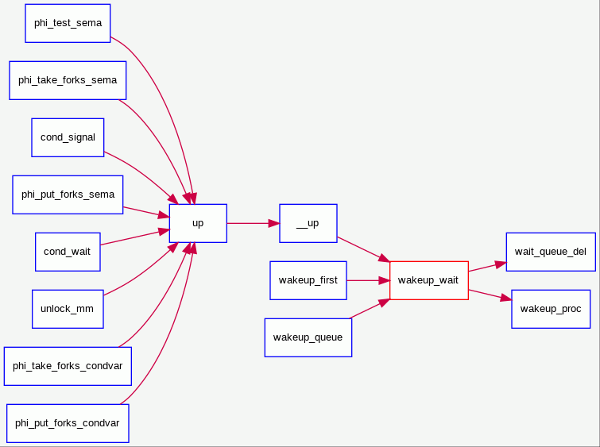
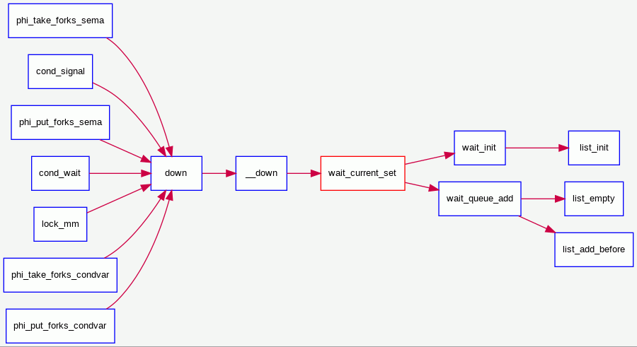
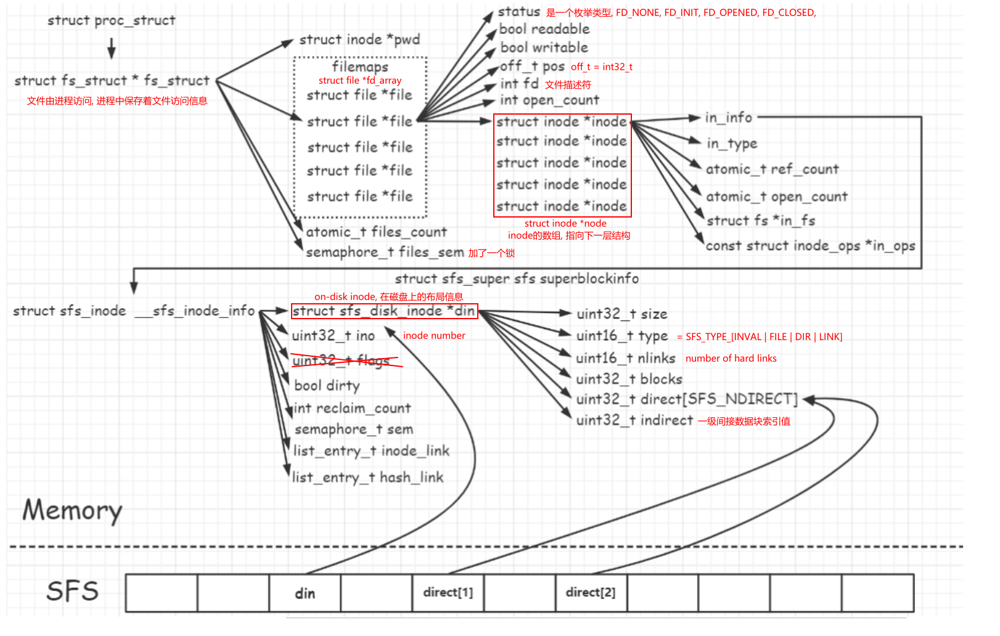
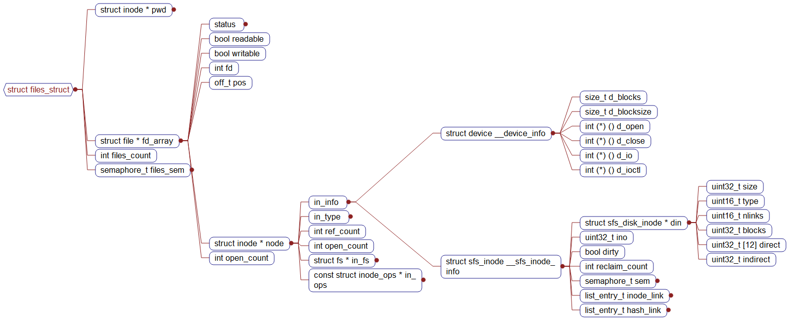
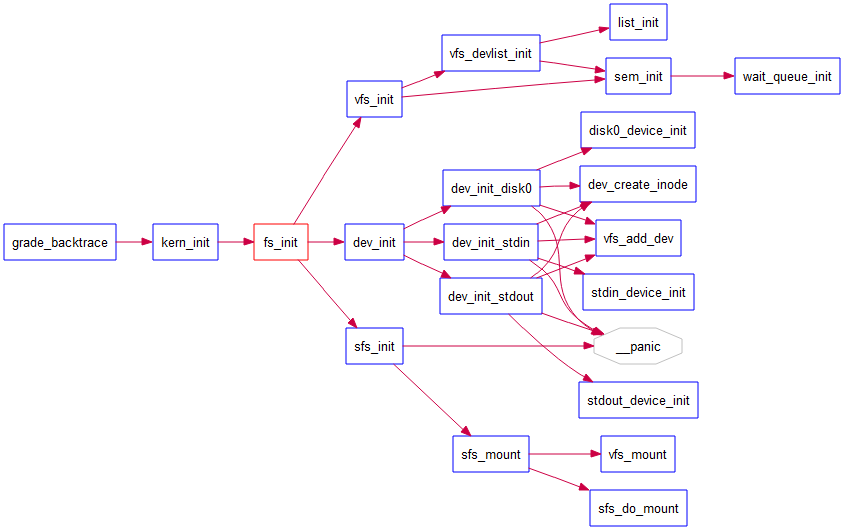
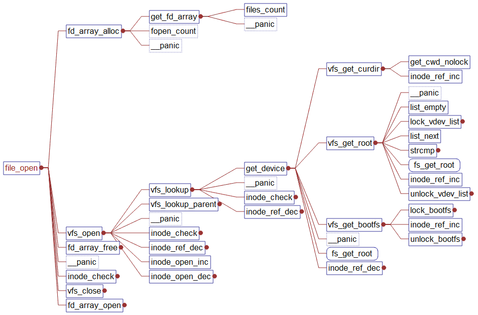
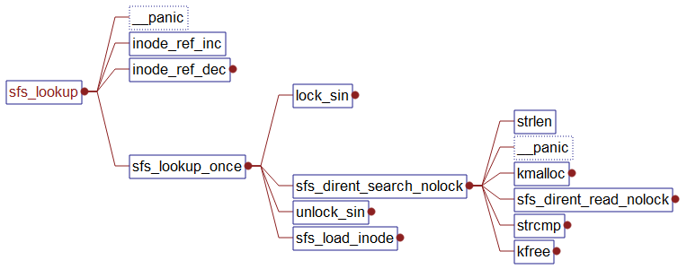

Tsinghua操作系统课程
不可视境界线最后变动于：2022年5月8日 上午
Lab1
知识点
1.BIOS启动顺序
- CPU加电后代码段寄存器初始化为CS = F000H, EIP = 0000FFF0H, 然后再计算 Base+IP = FFFF0000H + 0000FFF0H = FFFFFFF0H 得到BIOS的EPROM(Erasable Programmable Read Only Memory)所在地, 这个地址的第一条指令是一个长跳转指令(这样CS和EIP都会更新)到BIOS代码中执行
- BIOS做完计算机硬件自检和初始化后，会选择一个启动设备（例如软盘、硬盘、光盘等），并且读取该设备的第一扇区(即主引导扇区或启动扇区)到内存一个特定的地址0x7c00处，然后CPU控制权会转移到那个地址继续执行。至此BIOS的初始化工作做完了，进一步的工作交给了ucore的bootloader。
附:
- 在16位的8086 CPU时代，内存限制在1MB范围内，且BIOS的代码固化在EPROM中。在基于Intel的8086 CPU的PC机中的EPROM被编址在1ＭB内存地址空间的最高64KB中。PC加电后，CS寄存器初始化为0xF000，IP寄存器初始化为0xFFF0, CS:IP=0xF000:0XFFF0（Segment:Offset 表示）=0xFFFF0(Linear表示)
- 默认将执行BIOS ROM编址在32位内存地址空间的最高端，即位于4GB地址的最后一个64KB内。在PC系统开机复位时，CPU进入实模式，并将CS寄存器设置成0xF000，将它的shadow register的Base值初始化设置为0xFFFF0000，EIP寄存器初始化设置为0x0000FFF0。所以机器执行的第一条指令的物理地址是0xFFFFFFF0。80386的BIOS代码也要和以前8086的BIOS代码兼容，故地址0xFFFFFFF0处的指令还是一条长跳转指令
jmp F000:E05B。注意，这个长跳转指令会触发更新CS寄存器和它的shadow register，即执行jmp F000 : E05B后，CS将被更新成0xF000。表面上看CS其实没有变化，但CS的shadow register被更新为另外一个值了，它的Base域被更新成0x000F0000，此时形成的物理地址为Base+EIP=0x000FE05B，这就是CPU执行的第二条指令的地址。此时这条指令的地址已经是1M以内了，且此地址不再位于BIOS ROM中，而是位于RAM空间中。由于Intel设计了一种映射机制，将内存高端的BIOS ROM映射到1MB以内的RAM空间里，并且可以使这一段被映射的RAM空间具有与ROM类似的只读属性。所以PC机启动时将开启这种映射机制，让4GB地址空间的最高一个64KB的内容等同于1MB地址空间的最高一个64K的内容，从而使得执行了长跳转指令后，其实是回到了早期的8086 CPU初始化控制流，保证了向下兼容
例图:


2.实模式
参考资料:《Intel 80386 Reference Programmers Manual-i386》, 基本是这个的翻译
在bootloader接手BIOS的工作后，当前的PC系统处于实模式（16位模式）运行状态，在这种状态下软件可访问的物理内存空间不能超过1MB，且无法发挥Intel 80386以上级别的32位CPU的4GB内存管理能力。
实模式将整个物理内存看成分段的区域，程序代码和数据位于不同区域，操作系统和用户程序并没有区别对待，而且每一个指针都是指向实际的物理地址。这样，用户程序的一个指针如果指向了操作系统区域或其他用户程序区域，并修改了内容，那么其后果就很可能是灾难性的。通过修改A20地址线可以完成从实模式到保护模式的转换。有关A20的进一步信息可参考“关于A20 Gate”。z

- 地址
0-0x9ffff的640KB内存是DRAM，即插在主板上的内存条。
顶部0xf0000-0xfffff的64KB内存是ROM，存放BIOS代码。 - EPROM是通过地址来访问的, 80386将其映射到内存的顶端, 其他的一些外设也同样通过映射到地址空间来访问它们
3.分段机制/保护模式
a.保护模式
只有在保护模式下，80386的全部32根地址线有效，可寻址高达4G字节的线性地址空间和物理地址空间，可访问64TB（有2^14^个段，每个段最大空间为2^32^字节）的逻辑地址空间，可采用分段存储管理机制和分页存储管理机制。这不仅为存储共享和保护提供了硬件支持，而且为实现虚拟存储提供了硬件支持。通过提供4个特权级和完善的特权检查机制，既能实现资源共享又能保证代码数据的安全及任务的隔离。
【补充】保护模式下，有两个段表：GDT（Global Descriptor Table）和LDT（Local Descriptor Table），每一张段表可以包含8192 (2^13)个描述符[1]，因而最多可以同时存在2 * 2^13 = 2^14^个段。虽然保护模式下可以有这么多段，逻辑地址空间看起来很大，但实际上段并不能扩展物理地址空间，很大程度上各个段的地址空间是相互重叠的。目前所谓的64TB（2^(14+32)^=2^46^）逻辑地址空间是一个理论值，没有实际意义。在32位保护模式下，真正的物理空间仍然只有2^32字节那么大。注：在ucore lab中只用到了GDT，没有用LDT。
Reference: [1] 3.5.1 Segment Descriptor Tables, Intel® 64 and IA-32 Architectures Software Developer’s Manual
b.分段机制
b,c,d顺序按照35年前的i386文档, 图片来自IA-32文档
将内存划分成以起始地址和长度限制这两个二维参数表示的内存块，这些内存块就称之为段（Segment）。编译器把源程序编译成执行程序时用到的代码段、数据段、堆和栈等概念在这里可以与段联系起来，二者在含义上是一致的
转换逻辑地址（Logical Address,应用程序员看到的地址）到物理地址（Physical Address, 实际的物理内存地址）分以下两步：
[1] 分段地址转换：

[2] 分页地址转换，这一步中把线性地址转换为物理地址。（注意：这一步是可选的，由操作系统决定是否需要。在后续试验中会涉及。
c.Segment Selector
- A segment selector is a 16-bit identifier for a segment (see Figure 3-6). It does not point directly to the segment,
but instead points to the segment descriptor that defines the segment.

d.Segment register
For virtually any kind of program execution to take place, at least the code-segment (CS), data-segment (DS), and stack-segment (SS) registers must be loaded with valid segment selectors.
three additional data-segment registers (ES, FS, and GS) are optional

For a program to access a segment, the segment selector for the segment must have been loaded in one of the
segment registers. So, although a system can define thousands of segments, only 6 can be available for immediate
use.shadow register(“hidden” part):
When a segment selector is loaded into the visible part, the processor also loads the hidden part from the segment descriptor pointed to by the segment selector
e.Segment Descriptor
来自IA-32文档 P2902/3-10 Vol. 3A

f.Global Descriptor Tables
(IA-32 P2906/ 3-14 Vol. 3A):
全局描述符表的是一个保存多个段描述符的“数组”，其起始地址保存在全局描述符表寄存器GDTR中。GDTR长48位，其中高32位为基地址，低16位为段界限。由于GDT 不能有GDT本身之内的描述符进行描述定义，所以处理器采用GDTR为GDT这一特殊的系统段。注意，全局描述符表中第一个段描述符设定为空段描述符。GDTR中的段界限以字节为单位。对于含有N个描述符的描述符表的段界限通常可设为8*N-1。

g.Privilege Level
- Current privilege level (CPL) — The CPL is the privilege level of the currently executing program or task. It
is stored in bits 0 and 1 of the CS and SS segment registers. Normally, the CPL is equal to the privilege level of
the code segment from which instructions are being fetched. The processor changes the CPL when program
control is transferred to a code segment with a different privilege level.
The CPL is treated slightly differently when accessing conforming code segments. Conforming code segments can be accessed from any privilege level that is equal to or numerically greater (less privileged) than the DPL of the conforming code segment. Also, the CPL is not changed when the processor accesses a conforming code segment that has a different privilege level than the CPL.
- Descriptor privilege level (DPL) — The DPL is the privilege level of a segment or gate. It is stored in the DPL
field of the segment or gate descriptor for the segment or gate. - Requested privilege level (RPL) — The RPL is an override privilege level that is assigned to segment
selectors. It is stored in bits 0 and 1 of the segment selector. The RPL can be used to ensure that privileged code
does not access a segment on behalf of an application program unless the program itself has access privileges for
that segment. See Section 5.10.4, “Checking Caller Access Privileges (ARPL Instruction),” for a detailed description of
the purpose and typical use of the RPL.
PRIVILEGE CHECK:

4.中断与异常
- 中断机制给操作系统提供了处理意外情况的能力，同时它也是实现进程/线程抢占式调度的一个重要基石。但中断的引入导致了对操作系统的理解更加困难。
- 在操作系统中，有三种特殊的中断事件。
- 由CPU外部设备引起的 外部事件如I/O中断、时钟中断、控制台中断等是异步产生的（即产生的时刻不确定），与CPU的执行无关，我们称之为异步中断(asynchronous interrupt)也称外部中断,简称中断(interrupt)。
- 而把在CPU执行指令期间检测到不正常的或非法 的条件(如除零错、地址访问越界)所引起的内部事件称作同步中断(synchronous interrupt)，也称内部中断，简称**异常(**exception)。
- 把在程序中使用请求系统服务 的系统调用而引发的事件，称作陷入中断(trap interrupt)，也称软中断(soft interrupt)，系统调用(system call)简称trap。在后续试验中会进一步讲解系统调用。

Interrupt Descriptor Table:同GDT一样，IDT是一个8字节的描述符数组，但IDT的第一项可以包含一个描述符。CPU把中断（异常）号乘以8做为IDT的索引。IDT可以位于内存的任意位置，CPU通过IDT寄存器（IDTR）的内容来寻址IDT的起始地址。指令LIDT和SIDT用来操作IDTR。两条指令都有一个显示的操作数：一个6字节表示的内存地址(包含线性地址基址和界限)。
在保护模式下，最多会存在256个Interrupt/Exception Vectors。
范围[0，31]内的32个向量被异常Exception和NMI使用，但当前并非所有这32个向量都已经被使用，有几个当前没有被使用的，请不要擅自使用它们，它们被保留，以备将来可能增加新的Exception。
范围[32，255]内的向量被保留给用户定义的Interrupts。Intel没有定义，也没有保留这些Interrupts。用户可以将它们用作外部I/O设备中断（8259A IRQ），或者系统调用（System Call 、Software Interrupts）等。
IDT gate descriptors: Interrupts/Exceptions应该使用Interrupt Gate和Trap Gate，它们之间的唯一区别就是：当调用Interrupt Gate时，Interrupt会被CPU自动禁止；而调用Trap Gate时，CPU则不会去禁止或打开中断，而是保留它原来的样子。
【补充】所谓“自动禁止”，指的是CPU跳转到interrupt gate里的地址时，在将EFLAGS保存到栈上之后，清除EFLAGS里的IF位，以避免重复触发中断。在中断处理例程里，操作系统可以将EFLAGS里的IF设上,从而允许嵌套中断。但是必须在此之前做好处理嵌套中断的必要准备，如保存必要的寄存器等。二在ucore中访问Trap Gate的目的是为了实现系统调用。用户进程在正常执行中是不能禁止中断的，而当它发出系统调用后，将通过Trap Gate完成了从用户态（ring 3）的用户进程进了核心态（ring 0）的OS kernel。如果在到达OS kernel后禁止EFLAGS里的IF位，第一没意义（因为不会出现嵌套系统调用的情况），第二还会导致某些中断得不到及时响应，所以调用Trap Gate时，CPU则不会去禁止中断。总之，interrupt gate和trap gate之间没有优先级之分，仅仅是CPU在处理中断时有不同的方法，供操作系统在实现时根据需要进行选择。
在IDT中，可以包含如下3种类型的Descriptor：
- Task-gate descriptor （这里没有使用）
- Interrupt-gate descriptor （中断方式用到）
- Trap-gate descriptor（系统调用用到）

Interrrupt Gate and Trap Gate 和Call Gate非常相似, 不同的Gate用3bit的Type来表示:

由硬件完成的工作
硬件中断处理过程1（==起始==）：从CPU收到中断事件后，打断当前程序或任务的执行，根据某种机制跳转到中断服务例程去执行的过程。其具体流程如下：
- CPU在执行完当前程序的每一条指令后，都会去确认在执行刚才的指令过程中中断控制器（如：8259A）是否发送中断请求过来，如果有那么CPU就会在相应的时钟脉冲到来时从总线上读取中断请求对应的中断向量；
- CPU根据得到的中断向量（以此为索引）到IDT中找到该向量对应的中断描述符，中断描述符里保存着中断服务例程的段选择子；
- CPU使用IDT查到的中断服务例程的段选择子从**GDT(这几个表一定要区分开来, 现在这个是指寻址的段描述符表)**中取得相应的段描述符，段描述符里保存了中断服务例程的段基址和属性信息，此时CPU就得到了中断服务例程的起始地址
以上三个过程示意图: link
- CPU会根据CPL和中断服务例程的段描述符的DPL信息确认是否发生了特权级的转换。比如当前程序正运行在用户态，而中断程序是运行在内核态的，则意味着发生了特权级的转换，这时CPU会从当前程序的TSS信息（该信息在内存中的起始地址存在TR寄存器中）里取得该程序的内核栈地址，即包括内核态的ss和esp的值，并立即将系统当前使用的栈切换成新的内核栈。这个栈就是即将运行的中断服务程序要使用的栈。紧接着就将当前程序使用的用户态的ss和esp压到新的内核栈中保存起来；
- CPU需要开始保存当前被打断的程序的现场（即一些寄存器的值），以便于将来恢复被打断的程序继续执行。这需要利用内核栈来保存相关现场信息，即依次压入当前被打断程序使用的eflags，cs，eip，errorCode（如果是有错误码的异常）信息；
- CPU利用中断服务例程的段描述符将其第一条指令的地址加载到cs和eip寄存器中，开始执行中断服务例程。这意味着先前的程序被暂停执行，中断服务程序正式开始工作。
硬件中断处理过程2（==结束==）：中断处理工作完成后需要通过iret（或iretd）指令恢复被打断的程序的执行。CPU执行IRET指令的具体过程如下：
- 程序执行这条iret指令时，首先会从内核栈里弹出先前保存的被打断的程序的现场信息，即eflags，
cs，eip重新开始执行； - 如果存在特权级转换（
CS(CPL)>DPL），则还需要从内核栈中弹出用户态栈的ss和esp，这样也意味着栈也被切换回原先使用的用户态的栈了； - 如果此次处理的是带有错误码（errorCode）的异常，CPU在恢复先前程序的现场时，并不会弹出errorCode。这一步需要通过软件完成，即要求相关的中断服务例程在调用iret返回之前添加出栈代码主动弹出errorCode。
- 程序执行这条iret指令时，首先会从内核栈里弹出先前保存的被打断的程序的现场信息，即eflags，

特权级检查
中断处理得==特权级转换==是通过门描述符（gate descriptor）和相关指令来完成的。一个门描述符就是一个系统类型的段描述符，一共有4个子类型：
- 调用门描述符（call-gate descriptor may reside in the GDT or in an LDT, but not in the interrupt descriptor table (IDT)），
- 中断门描述符（interrupt-gate descriptor）
- 陷阱门描述符（trap-gate descriptor）
- 任务门描述符（task-gate descriptor）。
Task gates are used for task switching and are discussed in Chapter 7, “Task Management”. Trap and interrupt
gates are special kinds of call gates used for calling exception and interrupt handlers。中断门描述符和陷阱门描述符几乎是一样的。- 中断发生时实施特权检查的过程如下图所示：

- 门中的DPL和段选择符一起控制着访问，同时，段选择符结合偏移量（Offset）指出了中断处理例程的入口点。内核一般在门描述符中填入内核代码段的段选择子。产生中断前后，CPU一定不会将运行控制从高特权环转向低特权环，特权级必须要么保持不变（当操作系统内核自己被中断的时候），或被提升（当用户态程序被中断的时候）。无论哪一种情况，CPL必须大于等于目的代码段的DPL。如果CPL发生了改变，一个堆栈切换操作（通过TSS完成）就会发生。如果中断是被用户态程序中的指令所触发的（比如软件执行INT n生产的中断），还会增加一个额外的检查：门的DPL必须具有与CPL相同或更低的特权。这就防止了用户代码随意触发中断。如果这些检查失败，会产生一个一般保护异常（general-protection exception）。
ucore的实现流程
- 首先中断有几种类型
- 使用int软中断, 中断号为
T_SWITCH_TOU. 由于一开始ucore运行在内核, 所以内核到用户时会弹出栈上的ss和esp, 所以要在int指令前面加上两个push, 还要注意指令的字节长度匹配. - 使用int软中断, 中断号为
T_SWITCH_TOK. 这个时候从用户态到内核态, 要通过TR寄存器查找当前的内核栈地址, 立即切换然后压入用户态的ss和esp, 由于challenge里有说明不用返回, 所以int执行完后要释放这两个东西. - 其他情况就是时钟中断和键盘中断到目前为止都是内核->内核再跳回内核, 没有什么复杂之处.
- 使用int软中断, 中断号为
- cpu接收到中断号, 然后到IDT表里把中断号当做下标查找Interrupt Discriptor, 这个时候就找到了中断处理例程的入口地址.
- cpu依次压入eflags，cs，eip, errorCode(如果是有错误码的异常), 然后加载描述符中的地址, 进入中断处理例程.
- 处理例程一开始就是两个pushl, 分别是errorCode和trapno), 再jmp到
__alltraps把可能需要改变的寄存器值压到栈上
在栈上倒着构建一个trapframe - 接下来进入处理例程, 0-31中断号由Intel保留, ucore定义的用
IRQ_OFFSET + IRQ_xx- 如果是时钟中断, inc一个全局变量tick, 没啥复杂的
- 如果是特权级转换, 更改一下trapframe的cs, es, ds, fs即可
- 执行完毕后弹出由我们压入的寄存器值, 然后到了
__altraps的iret指令, 由cpu弹出eip, cs, eflags - 判断特权级转换来决定是否弹出ss, esp, 中断结束
1 | |
1 | |
5.地址空间
flowchart LR
逻辑地址或虚拟地址-->|分段地址转换|线性地址
线性地址-->|分页地址转换|物理地址
线性地址-->End
6.硬件访问
bootloader让CPU进入保护模式后，下一步的工作就是从硬盘上加载并运行OS。考虑到实现的简单性，bootloader的访问硬盘都是LBA模式的PIO（Program IO）方式，即所有的IO操作是通过CPU访问硬盘的IO地址寄存器完成。
一般主板有2个IDE通道，每个通道可以接2个IDE硬盘。访问第一个硬盘的扇区可设置IO地址寄存器0x1f0-0x1f7实现的，具体参数见下表。一般第一个IDE通道通过访问IO地址0x1f0-0x1f7来实现，第二个IDE通道通过访问0x170-0x17f实现。每个通道的主从盘的选择通过第6个IO偏移地址寄存器来设置。
表一 磁盘IO地址和对应功能
第6位：为1=LBA模式；0 = CHS模式 第7位和第5位必须为1
| IO地址 | 功能 |
|---|---|
| 0x1f0 | 读数据，当0x1f7不为忙状态时，可以读。 |
| 0x1f2 | 要读写的扇区数，每次读写前，你需要表明你要读写几个扇区。最小是1个扇区 |
| 0x1f3 | 如果是LBA模式，就是LBA参数的0-7位 |
| 0x1f4 | 如果是LBA模式，就是LBA参数的8-15位 |
| 0x1f5 | 如果是LBA模式，就是LBA参数的16-23位 |
| 0x1f6 | 第0~3位：如果是LBA模式就是24-27位 第4位：为0主盘；为1从盘 |
| 0x1f7 | 状态和命令寄存器。操作时先给命令，再读取，如果不是忙状态就从0x1f0端口读数据 |
当前 硬盘数据是储存到硬盘扇区中，一个扇区大小为512字节。读一个扇区的流程（可参看boot/bootmain.c中的readsect函数实现）大致如下：
- 等待磁盘准备好
- 发出读取扇区的命令
- 等待磁盘准备好
- 把磁盘扇区数据读到指定内存
附: TSS
在kern_init()->pmm_init()->gdt_init()中初始化, TSS中的内核栈地址就在这里设置
TSS可以在内存的任意位置, 而ucore的taskstate定义在pmm.c中, 通过构造门描述符 , 弄到struct segdesc gdt[]里面,
然后使用lgdt指令加载到GDT中, 内核栈(8KB)从c0120000 bootstack到c0122000 bootstacktop, 在entry.S中找到的, kernel.sym可看地址
1 | |
1 | |


附2: make
Special Built-in Target Names | Automatic Variables | Functions | Using Implicit Rules&Catalogue-of-Rules |
- $(foreach var,list,text):
foreach(var: list) - $(if condition,then-part[,else-part])
- $(filter pattern…,text)
- $(basename names…)
- The eval Function
- 含有
$(1)这个的call function就不是最高一级的call make --trace 2>/dev/null=vs.:=
几个练习
项目组成
练习一
理解通过make生成执行文件的过程
操作系统镜像文件ucore.img是如何一步一步生成的？(需要比较详细地解释Makefile中每一条相关命令和命令参数的含义，以及说明命令导致的结果)
- Makefile掌握不够的话根本看不懂在写什么
一个被系统认为是符合规范的硬盘主引导扇区的特征是什么？
- 最后两个字节是0x55,0xAA
后面又开了一篇博客: link
练习二
使用qemu执行并调试lab1中的软件
从CPU加电后执行的第一条指令开始，单步跟踪BIOS的执行。
- 直接将gdb连接到qemu, 断点也不用下直接停在第一条指令上
- 要注意的是此时
$pc($eip)不是真实的地址,(($cs<<4)+$eip)才是
在初始化位置0x7c00设置实地址断点,测试断点正常。
- 此时在bootloader中, 设置为
file obj/bootblock.o和b *0x7c00即可(别忘了continue要不然就是第一个问题了)
- 此时在bootloader中, 设置为
从0x7c00开始跟踪代码运行,将单步跟踪反汇编得到的代码与bootasm.S和 bootblock.asm进行比较。
1
2
3
4
5#改写Makefile文件
debug: $(UCOREIMG)
$(V)$(TERMINAL) -e "$(QEMU) -S -s -d in_asm -D $(BINDIR)/q.log -parallel stdio -hda $< -serial null"
$(V)sleep 2
$(V)$(TERMINAL) -e "gdb -q -tui -x tools/gdbinit"在调用qemu时增加
-d in_asm -D q.log参数，便可以将运行的汇编指令保存在q.log中。
练习三
分析bootloader进入保护模式的过程.
为何开启A20，以及如何开启A20
Intel早期的8086 CPU提供了20根地址线，但寄存器只有16位，所以使用段寄存器值 << 4 + 段内偏移值的方法来访问到所有内存，但按这种方式来计算出的地址的最大值为1088KB，超过20根地址线所能表示的范围，会发生“回卷”（和整数溢出有点类似）。但下一代的基于Intel 80286 CPU的计算机系统提供了24根地址线，当CPU计算出的地址超过1MB时便不会发生回卷，而这就造成了向下不兼容。为了保持完全的向下兼容性，IBM在计算机系统上加个硬件逻辑来模仿早期的回绕特征，而这就是A20 Gate。
A20 Gate的方法是把A20地址线控制和键盘控制器的一个输出进行AND操作，这样来控制A20地址线的打开（使能）和关闭（屏蔽\禁止）。一开始时A20地址线控制是被屏蔽的（总为0），直到系统软件通过一定的IO操作去打开它。当A20 地址线控制禁止时，则程序就像在8086中运行，1MB以上的地址不可访问；保护模式下A20地址线控制必须打开。A20控制打开后，内存寻址将不会发生回卷。
在当前环境中，所用到的键盘控制器8042的IO端口只有0x60和0x64两个端口。8042通过这些端口给键盘控制器或键盘发送命令或读取状态。输出端口P2用于特定目的。位0（P20引脚）用于实现CPU复位操作，位1（P21引脚）用于控制A20信号线的开启与否。
有关概念:
8042有4个寄存器：
- 1个8-bit长的Input buffer；Write-Only；
- 1个8-bit长的Output buffer； Read-Only；
- 1个8-bit长的Status Register；Read-Only；
- 1个8-bit长的Control Register；Read/Write。
有两个端口地址：60h和64h，有关对它们的读写操作描述如下：
- 读60h端口，读output buffer
- 写60h端口，写input buffer
- 读64h端口，读Status Register
- 操作Control Register，首先要向64h端口写一个命令（20h为读命令，60h为写命令），然后根据命令从60h端口读出Control Register的数据或者向60h端口写入Control Register的数据（64h端口还可以接受许多其它的命令）。
如果要写output, 则向64h写入命令0d1h, 向input buf写入control register中命令的参数
Status Register的定义（要用bit 0和bit 1）：
bit meaning 0 output register (60h) 中有数据 1 input register (60h/64h) 有数据 2 系统标志（上电复位后被置为0） 3 data in input register is command (1) or data (0) 4-7 (Nothing special)

代码中的流程:
读0x64端口(读Status Register), 等待第二位(标志input buffer是否为空)等于0
向64h发送0d1h命令(作用是写output port,即一个键盘控制器命令),
然后等待input buf为空时向0x60h写入control register的参数(即要输出在output port上的值)
1 | |
- 如何初始化GDT表
1 | |
- 进入保护模式：通过将cr0寄存器PE位置1便开启了保护模式
1 | |
- 通过长跳转更新cs的基地址
1 | |
- 设置段寄存器，并建立堆栈
1 | |
- 转到保护模式完成，进入boot主方法
1 | |
练习四
分析bootloader加载ELF格式的OS的过程。
- IDE: Integrated Drive Electronics，它的本意是指把控制器与盘体集成在一起的硬盘驱动器，IDE是表示硬盘的传输接口。
bootloader让CPU进入保护模式后，下一步的工作就是从硬盘上加载并运行OS。考虑到实现的简单性，bootloader的访问硬盘都是LBA模式的PIO（Program IO）方式，即所有的IO操作是通过CPU访问硬盘的IO地址寄存器完成。
一般主板有2个IDE通道，每个通道可以接2个IDE硬盘。访问第一个硬盘的扇区可设置IO地址寄存器0x1f0-0x1f7实现的，具体参数见下表。一般第一个IDE通道通过访问IO地址0x1f0-0x1f7来实现，第二个IDE通道通过访问0x170-0x17f实现。每个通道的主从盘的选择通过第6个IO偏移地址寄存器来设置。
| IO地址 | 功能 |
|---|---|
| 0x1f0 | 读数据，当0x1f7不为忙状态时，可以读。 |
| 0x1f2 | 要读写的扇区数，每次读写前，你需要表明你要读写几个扇区。最小是1个扇区 |
| 0x1f3 | 如果是LBA模式，就是LBA参数的0-7位 |
| 0x1f4 | 如果是LBA模式，就是LBA参数的8-15位 |
| 0x1f5 | 如果是LBA模式，就是LBA参数的16-23位 |
| 0x1f6 | 第0~3位：如果是LBA模式就是24-27位 第4位：为0主盘；为1从盘 |
| 0x1f7 | 状态和命令寄存器。操作时先给命令，再读取，如果不是忙状态就从0x1f0端口读数据 |
当前 硬盘数据是储存到硬盘扇区中，一个扇区大小为512字节。读一个扇区的流程（可参看boot/bootmain.c中的readsect函数实现）大致如下：
- 等待磁盘准备好
- 发出读取扇区的命令
- 等待磁盘准备好
- 把磁盘扇区数据读到指定内存
分析bootloader加载ELF格式的OS的过程。
首先看readsect函数，readsect从设备的第secno扇区读取数据到dst位置
1 | |
readseg简单包装了readsect，可以从设备读取任意长度的内容。
1 | |
在bootmain函数中，
1 | |
练习五
实现函数调用堆栈跟踪函数
发现并没有在这里提到stabs类型文件, 补充一下
- Stabs refers to a format for information that describes a program to a debugger
- This debugging information describes features of the source file like line numbsers, the types and scopes of variables, and function names, parameters, and scopes.
- generated by compiler into the ‘.s’ file
- documentation
ss:ebp指向的堆栈位置储存着caller的ebp，以此为线索可以得到所有使用堆栈的函数ebp。
ss:ebp+4指向caller调用时的eip，ss:ebp+8等是（可能的）参数。
输出中，堆栈最深一层为
1 | |
其对应的是第一个使用堆栈的函数，bootmain.c中的bootmain。
bootloader设置的堆栈从0x7c00开始，使用”call bootmain”转入bootmain函数。
call指令压栈，所以bootmain中ebp为0x7bf8。
print_stackframe:
1 | |
需要注意的问题:
gdb命令通过文件加载debuginfo, 包括源代码和函数位置, 一般我们直接使用gdb filepath -q直接进入调试界面, 而本实验先启动qemu(使用.img镜像文件), 然后gdb通过remote连接到qemu中, Makefile中指定的gdbinit文件可以指定一些初始命令.
这样, gdb没有任何debuginfo, 全靠远程端口给出信息, 所以我们可以在init文件中添加file命令加载符号信息
练习六
完善中断初始化和处理
中断描述符表（也可简称为保护模式下的中断向量表）中一个表项占多少字节？其中哪几位代表中断处理代码的入口？
一个表项的结构如下
1
2
3
4
5
6
7
8
9
10
11
12/* Gate descriptors for interrupts and traps */
struct gatedesc {
unsigned gd_off_15_0 : 16; // low 16 bits of offset in segment
unsigned gd_ss : 16; // segment selector
unsigned gd_args : 5; // # args, 0 for interrupt/trap gates
unsigned gd_rsv1 : 3; // reserved(should be zero I guess)
unsigned gd_type : 4; // type(STS_{TG,IG32,TG32})
unsigned gd_s : 1; // must be 0 (system)
unsigned gd_dpl : 2; // descriptor(meaning new) privilege level
unsigned gd_p : 1; // Present
unsigned gd_off_31_16 : 16; // high bits of offset in segment
};该表项的大小为
16+16+5+3+4+1+2+1+16 == 8*8bit，即8字节。根据IDT表项的结构，我们可以得知，IDT表项的第二个成员
gd_ss为段选择子，第一个成员gd_off_15_0和最后一个成员gd_off_31_16共同组成一个段内偏移地址。根据段选择子和段内偏移地址就可以得出中断处理程序的地址。
编程完善kern/trap/trap.c中对中断向量表进行初始化的函数idt_init.
具体实现如下，详细信息以注释的形式写入代码中。
1
2
3
4
5
6
7
8
9
10
11
12
13
14
15
16void idt_init(void) {
// __vectors定义于vector.S中
extern uintptr_t __vectors[];
int i;
for (i = 0; i < sizeof(idt) / sizeof(struct gatedesc); i ++)
// 目标idt项为idt[i]
// 该idt项为内核代码，所以使用GD_KTEXT段选择子
// 中断处理程序的入口地址存放于__vectors[i]
// 特权级为DPL_KERNEL
SETGATE(idt[i], 0, GD_KTEXT, __vectors[i], DPL_KERNEL);
// 设置从用户态转为内核态的中断的特权级为DPL_USER
// 好像就是int 0x80, 不过我没有在任何地方看到说明, 尝试自己写这一段代码花了好多无谓的时间
SETGATE(idt[T_SWITCH_TOK], 0, GD_KTEXT, __vectors[T_SWITCH_TOK], DPL_USER);
// 加载该IDT
lidt(&idt_pd);
}
编程完善trap.c中的中断处理函数trap_dispatch**(called by trap(), and trap() called in trapentry.S)**，在对时钟中断进行处理的部分填写trap函数中处理时钟中断的部分，使操作系统每遇到100次时钟中断后，调用print_ticks子程序，向屏幕上打印一行文字”100 ticks”。
这个实现还是比较简单的，注释都说清楚了
1
2
3
4
5case IRQ_OFFSET + IRQ_TIMER: // 全局变量ticks定义于kern/driver/clock.c
ticks++;
if(ticks % TICK_NUM == 0)
print_ticks();
break; // .........
结果:

拓展练习
Challenge 1: 扩展proj4,增加syscall功能，即增加一用户态函数（可执行一特定系统调用：获得时钟计数值），当内核初始完毕后，可从内核态返回到用户态的函数，而用户态的函数又通过系统调用得到内核态的服务
详见知识点
Challenge 2:用键盘实现用户模式内核模式切换。具体目标是：“键盘输入3时切换到用户模式，键盘输入0时切换到内核模式”。 基本思路是借鉴软中断(syscall功能)的代码，并且把trap.c中软中断处理的设置语句拿过来。
Lab2
知识点
1.探测系统物理内存布局
- 当 ucore 被启动之后，最重要的事情就是知道还有多少内存可用，一般来说，获取内存大小的方法由 BIOS 中断调用和直接探测两种。但BIOS 中断调用方法是一般只能在实模式下完成，而直接探测方法必须在保护模式下完成。通过 BIOS 中断获取内存布局有三种方式，都是基于INT 15h中断，分别为88h e801h e820h。但是 并非在所有情况下这三种方式都能工作。在 Linux kernel 里，采用的方法是依次尝试这三 种方法。而在本实验中，我们通过e820h中断获取内存信息。因为e820h中断必须在实模式下使用，所以我们在 bootloader 进入保护模式之前调用这个 BIOS 中断，并且把 e820 映 射结构保存在物理地址0x8000处。
- INT 15h调用完成后, 将返回值存入一个结构体中:
1 | |
存入的过程为:
1 | |
edata表示kernel的data段结束地址；end表示bss段的结束地址（即整个kernel的结束地址）
edata[]和 end[]这些变量是ld根据kernel.ld链接脚本生成的全局变量，表示相应段的结束地址，它们不在任何一个.S、.c或.h文件中定义，但仍然可以在源码文件中使用。
2.管理物理 内存
- 每一个物理页的属性用结构Page来表示
1 | |
- 而flag第一位和第二位(即bit 0 and bit 1, PG_reserved和PG_property的0和1是指第几位):
1 | |
需要注意的是用到property成员变量的这个Page比较特殊，是这个连续内存空闲块地址最小的一页（即头一页， Head Page）,
用bit PG_property来enable
- 使用btl指令置位某一个bit:
BTS %1, %2 :先把%2对应的内存地址的第%1位的值填入cflags寄存器的CF，然后把该位置位)
1 | |
- 管理空闲块
1 | |
- pmm_manager(): 一个函数指针列表, 用于引用管理内存的函数, 指向这个结构体的指针也是
pmm_manager
项目定义了一个default_pmm_manager, 每一个函数指向的具体函数定义在default_pmm_init.c中, 将此结构体地址赋值给
(pmm_manager *)pmm_manager, 可以更改为其他内存分配算法
1 | |
kern_init()中pmm_init()的==page_init()==部分内容
1 | |
3.内存空间布局
在uCore中，CPU先在bootasm.S（实模式）中通过调用BIOS中断，将物理内存的相关描述符写入特定位置
0x8000，然后读入kernel至物理地址0x10000、虚拟地址0xC0000000。而kernel在
page_init函数中，读取物理内存地址0x8000处的内存，查找最大物理地址，并计算出所需的页面数。虚拟页表VPT(Virtual Page Table)的地址紧跟kernel，其地址为4k对齐。虚拟地址空间结构如下所示：1
2
3
4
5
6
7
8
9
10
11
12
13
14
15
16
17
18
19
20
21
22
23
24
25
26/* *
* Virtual memory map: Permissions
* kernel/user
*
* 4G -----------> +---------------------------------+
* | |
* | Empty Memory (*) |
* | |
* +---------------------------------+ 0xFB000000
* | Cur. Page Table (Kern, RW) | RW/-- PTSIZE
* VPT ----------> +---------------------------------+ 0xFAC00000
* | Invalid Memory (*) | --/--
* KERNTOP ------> +---------------------------------+ 0xF8000000
* | |
* | Remapped Physical Memory | RW/-- KMEMSIZE=896MB
* | |
* KERNBASE -----> +---------------------------------+ 0xC0000000
* | |
* | |
* | |
* ~~~~~~~~~~~~~~~~~~~~~~~~~~~~~~~~~~~
* (*) Note: The kernel ensures that "Invalid Memory" is *never* mapped.
* "Empty Memory" is normally unmapped, but user programs may map pages
* there if desired.
*
* */完成物理内存页管理初始化工作后，其物理地址的分布空间如下
1
2
3
4
5
6
7
8
9
10
11
12
13
14
15
16
17
18
19
20
21
22
23
24
25
26
27
28
29
30
31
32
33
34
35
36+----------------------+ <- 0xFFFFFFFF(4GB) ---------------------------- 4GB
| 一些保留内存，例如用于| 保留空间
| 32bit设备映射空间等 |
+----------------------+ <- 实际物理内存空间结束地址 ----------------------------
| |
| |
| 用于分配的 | 可用的空间
| 空闲内存区域 |
| |
| |
| |
+----------------------+ <- 空闲内存起始地址 ----------------------------
| VPT页表存放位置 | VPT页表存放的空间 (4MB左右)
+----------------------+ <- bss段结束处 ----------------------------
|uCore的text、data、bss | uCore各段的空间
+----------------------+ <- 0x00100000(1MB) ---------------------------- 1MB
| BIOS ROM |
+----------------------+ <- 0x000F0000(960KB)
| 16bit设备扩展ROM | 显存与其他ROM映射的空间
+----------------------+ <- 0x000C0000(768KB)
| CGA显存空间 |
+----------------------+ <- 0x000B8000 ---------------------------- 736KB
| 空闲内存 |
+----------------------+ <- 0x00011000(+4KB) uCore header的内存空间
| uCore的ELF header数据 |
+----------------------+ <-0x00010000 ---------------------------- 64KB
| 空闲内存 |
+----------------------+ <- 基于bootloader的大小 bootloader的
| bootloader的 | 内存空间
| text段和data段 |
+----------------------+ <- 0x00007C00 ---------------------------- 31KB
| bootloader和uCore |
| 共用的堆栈 | 堆栈的内存空间
+----------------------+ <- 基于栈的使用情况
| 低地址空闲空间 |
+----------------------+ <- 0x00000000 ---------------------------- 0KB易知，其页表地址之上的物理内存空间是空闲的（除去保留的内存），故将该物理地址之下的物理空间对应的页表全部设置为保留(reserved)。并将这些空闲的内存全部添加进页表项中。
4.分配算法实现
在default_pmm.c中
实现了最简单的first-fit, 其他算法为challenge
5.段页式存储管理
总体框架、分页机制图

Page Directory is 4Kbyte-alignd, 所以CR3给的32位地址其实低12位为0, 只要把32:12和Linear address的31:22拼成一个32位地址即可:

虚拟页表和页目录表结构
每个页表项（PTE）都由一个32位整数来存储数据，其结构如下
1 | |
- 0 - Present: 表示当前PTE所指向的物理页面是否驻留在内存中
- 1 - Writeable: 表示是否允许读写
- 2 - User: 表示该页的访问所需要的特权级。即User(ring 3)是否允许访问
- 3 - PageWriteThough: 表示是否使用write through缓存写策略
- 4 - PageCacheDisable: 表示是否不对该页进行缓存
- 5 - Access: 表示该页是否已被访问过
- 6 - Dirty: 表示该页是否已被修改
- 7 - PageSize: 表示该页的大小
- 8 - MustBeZero: 该位必须保留为0
- 9-11 - Available: 第9-11这三位并没有被内核或中断所使用，可保留给OS使用。
- 12-31 - Offset: 目标物理地址的高20位。
页目录表:

| Bit Position(s) | Contents |
|---|---|
| 0(P) | Present: must be 1 to reference a page table |
| 1(R/W) | Read/write; if 0,writes may not be allowed to the 4-MByte region controlled by this entry (see Section 4.6) |
| 2(U/S) | User/supervisor, if 0, user-mode accesses are not allowed to the 4-MByte region controlled by this entry (see Section 4.6) |
| 3(PWT) | Page-level write-through; indirectly determines the memory type used to access the page table referenced by this entry (see Section 4.9) |
| 4(PCD) | Page-level cache disable; indirectly determines the memory type used to access the page table referenced by this entry (see Section 4.9) |
| 5(A) | Accessed; indicates whether this entry has been used for linear-address translation (see Section 4.8) |
| 6 | lgnored |
| 7(PS) | lf CR4.PSE= 1, must be 0 (otherwise, this entry maps a 4-MByte page; see Table 4-4); otherwise, ignored |
| 11:8 | lgnored |
| 31:12 | Physical address of 4-KByte aligned page table referenced by this entry |
6.内存初始化函数pmm_init()
1 | |
7.链接脚本与地址映射
- edata[]和 end[]这些变量是ld根据kernel.ld链接脚本生成的全局变量，表示相应段的起始地址或结束地址等，它们不在任何一个.S、.c或.h文件中定义。
- 逻辑地址或虚拟地址是可执行代码在编译的时候由链接器生成的
- ucore内核的链接地址==ucore内核的虚拟地址；boot loader加载ucore内核用到的加载地址==ucore内核的物理地址。
- ->详见实验指导书<-
地址映射的四个阶段
在lab2中，为了建立正确的地址映射关系，ld在链接阶段生成了ucore OS执行代码的虚拟地址，而bootloader与ucore OS协同工作，通过在运行时对地址映射的一系列“腾挪转移”，从计算机加电，启动段式管理机制，启动段页式管理机制，在段页式管理机制下运行这整个过程中，虚拟地址到物理地址的映射产生了多次变化，实现了最终的段页式映射关系：
1 | |
最开始: 链接脚本
tools/kernel.ld文件在lab1和lab2中的区别。在lab1中：
1 | |
这意味着在lab1中通过ld工具形成的ucore的起始虚拟地址从0x100000开始，注意：这个地址是虚拟地址。但由于lab1中建立的段地址映射关系为对等关系，所以ucore的物理地址也是从0x100000开始，而ucore的入口函数kern_init的起始地址。所以在lab1中虚拟地址、线性地址以及物理地址之间的映射关系如下：
1 | |
在lab2中：
1 | |
这意味着lab2中通过ld工具形成的ucore的起始虚拟地址从0xC0100000开始，注意：这个地址也是虚拟地址。入口函数为kern_entry函数（在kern/init/entry.S中）。这与lab1有很大差别。但其实在lab1和lab2中，bootloader把ucore都放在了起始物理地址为0x100000的物理内存空间。这实际上说明了ucore在lab1和lab2中采用的地址映射不同。lab2在不同阶段有不同的虚拟地址、线性地址以及物理地址之间的映射关系。
也请注意，这个起始虚拟地址的变化其实并不会影响一般的跳转和函数调用，因为它们实际上是相对跳转。但是，对于绝对寻址的全局变量的引用，就需要用REALLOC宏(即将要重新计算的地址-0xC0100000)进行一些运算来确保地址是正确的。
第一个阶段
（开启保护模式，创建启动段表）是bootloader阶段，即从bootloader的start函数（在boot/bootasm.S中）到执行ucore kernel的kern_entry函数之前，其虚拟地址、线性地址以及物理地址之间的映射关系与lab1的一样，即：
1 | |
第二个阶段
（创建初始页目录表，开启分页模式）从kern_entry函数开始，到pmm_init函数被执行之前。
编译好的ucore自带了一个**设置好的(就在entry.S里, 也不知道为什么要设置成两段映射)**页目录表和相应的页表，将0~4M的线性地址一一映射到物理地址。
1 | |
了解了一一映射的二级页表结构后，接下来就要使能分页机制了，这主要是通过几条汇编指令（在kern/init/entry.S中）实现的，主要做了两件事：
1 | |
执行完这几条指令后，计算机系统进入了分页模式！虚拟地址、线性地址以及物理地址之间的临时映射关系为：
1 | |
可以看到，其实仅仅比第一个阶段增加了下面一行的0xC0000000偏移的映射，并且作用范围缩小到了0~4M。在下一个阶段, 会将作用范围继续扩充到0~KMEMSIZE。
实际上这种映射限制了内核的大小。当内核大小超过预期的4MB （实际上是3M，因为内核从 0x100000开始编址）就可能导致打开分页之后内核crash，在某些试验中，也的确出现了这种情况。解决方法同样简单，就是正确填充更多的页目录项即可。
此时的内核（EIP）还在0~4M的低虚拟地址区域运行，而在之后，这个区域的虚拟内存是要给用户程序使用的。为此，需要使用一个绝对跳转来使内核跳转到高虚拟地址（代码在kern/init/entry.S中）：
1 | |
跳转完毕后，通过把boot_pgdir[0]对应的第一个页目录表项（0~4MB）清零来取消了临时的页映射关系：
1 | |
最终，离开这个阶段时，虚拟地址、线性地址以及物理地址之间的映射关系为：
1 | |
总结来看，这一阶段的目的就是更新映射关系的同时将运行中的内核（EIP）从低虚拟地址“迁移”到高虚拟地址，而不造成伤害。
不过，这还不是我们期望的映射关系，因为它仅仅映射了0~4MB。对于段表而言，也缺少了运行ucore所需的用户态段描述符和TSS（段）描述符相应表项。
第三个阶段
（完善段表和页表）从pmm_init函数被调用开始。pmm_init函数将页目录表项补充完成（从0~4M扩充到0~KMEMSIZE）。然后，更新了段映射机制，使用了一个新的段表。这个新段表除了包括内核态的代码段和数据段描述符，还包括用户态的代码段和数据段描述符以及TSS（段）的描述符。理论上可以在第一个阶段，即bootloader阶段就将段表设置完全，然后在此阶段继续使用，但这会导致内核的代码和bootloader的代码产生过多的耦合，于是就有了目前的设计。
这时形成了我们期望的虚拟地址、线性地址以及物理地址之间的映射关系：
1 | |
段表相应表项和TSS也被设置妥当。
自映射机制
4GB内存都有用到吗?
众所周知, 从物理地址空间中的每一个block分配page table之后(在default_init_memmap完成), 虚拟地址空间是一片连续的空间, 从0xC0000000开始, 大小为0x38000000=896MB, 并没有用完全部4GB的地址空间, 这只是一个设定, 可以根据情况进行改变.
memlayout.h中定义了常量
1 | |
自映射是什么?
注意到每一个4KB页表中有1k个4B的pte, 每个pte指向物理空间中4KB的page, 整个page table指向了虚拟空间中4MB大小的pages. 如果我们把映射4GB空间的4MB页表放在4MB对齐的虚拟地址处, 那么可以想到有一个页表刚好映射他所在的4MB区域, 于是就充当了页目录表的功能.
具体而言，ucore是这样设计的，首先设置了一个常量（memlayout.h）：
VPT=0xFAC00000， 这个地址的二进制表示为：
1 | |
高10位为1111 1010 11，即10进制的1003，中间10位为0，低12位也为0。在pmm.c中有两个全局初始化变量
1 | |
并在pmm_init函数执行了如下语句：
1 | |
这些变量和语句有何特殊含义呢？其实vpd变量的值就是页目录表的起始虚地址0xFAFEB000，且它的高10位和中10位是相等的，都是10进制的1003。当执行了上述语句，就确保了vpd变量的值就是页目录表的起始虚地址，且vpt是页目录表中第一个目录表项指向的页表的起始虚地址。此时描述内核虚拟空间的页目录表的虚地址为0xFAFEB000，大小为4KB。页表的理论连续虚拟地址空间0xFAC00000~0xFB000000，大小为4MB。因为这个连续地址空间的大小为4MB，可有1M个PTE，即可映射4GB的地址空间。
有什么好处?
在页机制建立好后, 如果我们这时需要按虚拟地址的地址顺序显示整个页目录表和页表的内容，则要查找页目录表的页目录表项内容，根据页目录表项内容找到页表的物理地址**(pdt和pt为什么存放的是物理地址?)**，再转换成对应的虚地址，然后访问页表的虚地址，搜索整个页表的每个页目录项。这样过程比较繁琐。
但是利用以上的方法, 通过连续扫描这特定的4MB虚拟地址空间，就很容易访问每个页目录表项和页表项内容。
在pmm.c中的函数print_pgdir就是基于ucore的页表自映射方式完成了对整个页目录表和页表的内容扫描和打印。
1 | |
练习3+2
练习一
实现 first-fit 连续物理内存分配算法
- 简单的修改了几个函数, 甚至不用全都改, 不过free函数我调试了好久
default_init_memmap
该函数将新页面插入链表时，没有按照地址顺序插入
1
list_add(&free_list, &(base->page_link));故需要修改该行代码，使其按地址顺序插入至双向链表中。
1
list_add_before(&free_list, &(base->page_link));
default_alloc_pages
在原先的代码中，当获取到了一个大小足够大的页面地址时，程序会先将该页头从链表中断开，切割，并将剩余空间放回链表中。但将剩余空间放回链表时，并没有按照地址顺序插入链表。
连续空闲页面中的第一个页称为页头，page header。
1
2
3
4
5
6
7
8
9
10
11if (page != NULL) {
list_del(&(page->page_link));
if (page->property > n) {
struct Page *p = page + n;
p->property = page->property - n;
// 注意这一步
list_add(&free_list, &(p->page_link));
}
nr_free -= n;
ClearPageProperty(page);
}以下是修改后的代码
1
2
3
4
5
6
7
8
9
10
11
12if (page != NULL) {
if (page->property > n) {
struct Page *p = page + n;
p->property = page->property - n;
SetPageProperty(p);
// 注意这一步add after
list_add_after(&(page->page_link), &(p->page_link));
}
list_del(&(page->page_link));
nr_free -= n;
ClearPageProperty(page);
}
default_free_pages
该函数默认会在函数末尾处，将待释放的页头插入至链表的第一个节点。
1
list_add(&free_list, &(base->page_link));所以我们需要修改这部分代码，使其按地址顺序插入至对应的链表结点处。
可以在循环中记录比这个page地址小的free_page, 而且还要设置标记来表明是否有这么一个page, 具体参见源码
练习二
实现寻找虚拟地址对应的页表项.
通过设置页表和对应的页表项，可建立虚拟内存地址和物理内存地址的对应关系。
其中的
get_pte函数是设置页表项环节中的一个重要步骤。此函数找到一个虚地址对应的二级页表项的内核虚地址，如果此二级页表项不存在，则分配一个包含此项的二级页表。
以下为实现的代码
1 | |
请描述页目录项（Pag Director Entry）和页表（Page Table Entry）中每个组成部分的含义和以及对ucore而言的潜在用处。
请查看虚拟页表结构
如果ucore执行过程中访问内存，出现了页访问异常，请问硬件要做哪些事情？
- 将引发页访问异常的地址将被保存在cr2寄存器中
- 设置错误代码
- 引发Page Fault，将外存的数据换到内存中
- 进行上下文切换，退出中断，返回到中断前的状态
练习三
释放某虚地址所在的页并取消对应二级页表项的映射
1 | |
两个问题:
数据结构Page的全局变量（其实是一个数组）的每一项与页表中的页目录项和页表项有无对应关系？如果有，其对应关系是啥？
CPU如果要访问内存地址, 送出CPU的肯定是虚拟地址, 经过MMU的转换完成虚拟地址到物理地址的转换.
在MMU中, 取出虚拟地址高10位和%cr3拼接成页目录表条目(pdte), 读取出内存中的页目录表(或者在MMU中的TLB)所存储的页表物理地址, 然后发送这个物理地址+虚拟地址中间十位到内存中访问到页表条目, 读出所在page的物理地址, 然后再和虚拟地址低12位拼接成物理地址到内存中访问.
如果没有TLB, 这中间会有多次访存:
- 为读取目录项而访问主存。
- 为读取页表项而访问主存。
- 为读取操作数或指令而访问主存。
回答本文章中的一个问题: 为什么页目录表和页表存储的是对应的物理地址而不是虚拟地址?
原因也明了了, 这两个表就是MMU和内存合作完成虚拟地址到物理地址转换的基础, 而虚拟地址是在内核中使用的一个抽象连续空间的地址, 和MMU关系不大, 更不必往表项里存储虚拟地址, 何况这么做还会导致递归查找[1]
如果希望虚拟地址与物理地址相等，则需要如何修改lab2，完成此事？ 鼓励通过编程来具体完成这个问题
将
labcodes/lab2/tools/kernel.ld中的加载地址从0xC0100000修改为0x01
2
3
4// 修改前
. = 0xC0100000;
// 修改后
. = 0x0;将
mm/中的内核偏移地址修改为01
2
3
4// 修改前
#define KERNBASE 0xC0000000
// 修改后
#define KERNBASE 0x0最后一步，但也是必须要做的一步——关闭页机制。将开启页机制的那一段代码删除或注释掉最后一句即可。
1
2
3
4
5
6# 修改后
movl %cr0, %eax
orl $(CR0_PE | CR0_PG | CR0_AM | CR0_WP | CR0_NE | CR0_TS | CR0_EM | CR0_MP), %eax
andl $~(CR0_TS | CR0_EM), %eax
# 注释了最后一句
# movl %eax, %cr0需要注意的是，需要把开启页表关闭，否则会报错，**因为页表开启时认为偏移量不为0(有待考证)**。
拓展练习
Challenge 1
buddy system（伙伴系统）分配算法, 伙伴分配器的一个极简实现 具体实现
Buddy System算法把系统中的可用存储空间划分为存储块(Block)来进行管理, 每个存储块的大小必须是2的n次幂(Pow(2, n)), 即1, 2, 4, 8, 16, 32, 64, 128…
经过一番思考, 属于是没搞懂用在这里的优势在哪, 分配的时候得遍历一遍双向链表, 找到了再分割, 和FIFO没啥区别, 释放时稍微有一点优势, 但最主要的问题是如果内存探测弄出的block很多的话也就只有略微有一点优势, 至于用双向链表而不是二叉树就更离谱了, 不如不写
Challenge 2
slub算法，实现两层架构的高效内存单元分配，第一层是基于页大小的内存分配，第二层是在第一层基础上实现基于任意大小的内存分配。可简化实现，能够体现其主体思想即可。
- 参考linux的slub分配算法/，在ucore中实现slub分配算法。要求有比较充分的测试用例说明实现的正确性，需要有设计文档。
Lab3
知识点
0.项目组成
相对与实验二，实验三主要改动如下：
- kern/mm/default_pmm.[ch]：实现基于struct pmm_manager类框架的Fist-Fit物理内存分配参考实现（分配最小单位为页，即4096字节），相关分配页和释放页等实现会间接被kmalloc/kfree等函数使用。
- kern/mm/pmm.[ch]：pmm.h定义物理内存分配类框架struct pmm_manager。pmm.c包含了对此物理内存分配类框架的访问，以及与建立、修改、访问页表相关的各种函数实现。在本实验中会用到kmalloc/kfree等函数。
- libs/list.h：定义了通用双向链表结构以及相关的查找、插入等基本操作，这是建立基于链表方法的物理内存管理（以及其他内核功能）的基础。在lab0文档中有相关描述。其他有类似双向链表需求的内核功能模块可直接使用list.h中定义的函数。在本实验中会多次用到插入，删除等操作函数。
- kern/driver/ide.[ch]：定义和实现了内存页swap机制所需的磁盘扇区的读写操作支持；在本实验中会涉及通过swapfs_*函数间接使用文件中的函数。故了解即可。
- kern/fs/*：定义和实现了内存页swap机制所需从磁盘读数据到内存页和写内存数据到磁盘上去的函数 swapfs_read/swapfs_write。在本实验中会涉及使用这两个函数。
- kern/mm/memlayout.h：修改了struct Page，增加了两项pra_*成员结构，其中pra_page_link可以用来建立描述各个页访问情况（比如根据访问先后）的链表。在本实验中会涉及使用这两个成员结构，以及le2page等宏。
- kern/mm/vmm.[ch]：vmm.h描述了mm_struct，vma_struct等表述可访问的虚存地址访问的一些信息，下面会进一步详细讲解。vmm.c涉及mm,vma结构数据的创建/销毁/查找/插入等函数，这些函数在check_vma、check_vmm等中被使用，理解即可。而page fault处理相关的do_pgfault函数是本次实验需要涉及完成的。
- kern/mm/swap.[ch]：定义了实现页替换算法类框架struct swap_manager。swap.c包含了对此页替换算法类框架的初始化、页换入/换出等各种函数实现。重点是要理解何时调用swap_out和swap_in函数。和如何在此框架下连接具体的页替换算法实现。check_swap函数以及被此函数调用的_fifo_check_swap函数完成了对本次实验中的练习2：FIFO页替换算法基本正确性的检查，可了解，便于知道为何产生错误。
- kern/mm/swap_fifo.[ch]：FIFO页替换算法的基于页替换算法类框架struct swap_manager的简化实现，主要被swap.c的相关函数调用。重点是_fifo_map_swappable函数（可用于建立页访问属性和关系，比如访问时间的先后顺序）和_fifo_swap_out_victim函数（可用于实现挑选出要换出的页），当然换出哪个页需要借助于fifo_map_swappable函数建立的某种属性关系，已选出合适的页。
- kern/mm/mmu.h：其中定义了页表项的各种属性位，比如PTE_P\PET_D\PET_A等，对于实现扩展实验的clock算法会有帮助。
本次实验的主要练习集中在vmm.c中的do_pgfault函数和swap_fifo.c中的_fifo_map_swappable函数、_fifo_swap_out_victim函数。
1.实验执行流程概述
首先是初始化过程。参考ucore总控函数init的代码，可以看到在调用完成虚拟内存初始化的vmm_init函数之前，需要首先调用pmm_init函数完成物理内存的管理，这也是我们lab2已经完成的内容。接着是执行中断和异常相关的初始化工作，即调用pic_init函数和idt_init函数等，这些工作与lab1的中断异常初始化工作的内容是相同的。
在调用完idt_init函数之后，将进一步调用三个lab3中才有的新函数vmm_init、ide_init和swap_init。这三个函数涉及了本次实验中的两个练习。第一个函数vmm_init是检查我们的练习1是否正确实现了。为了表述不在物理内存中的“合法”虚拟页，需要有数据结构来描述这样的页，为此ucore建立了mm_struct和vma_struct数据结构（接下来的小节中有进一步详细描述），假定我们已经描述好了这样的“合法”虚拟页，当ucore访问这些“合法”虚拟页时，会由于没有虚实地址映射而产生页访问异常。如果我们正确实现了练习1，则do_pgfault函数会申请一个空闲物理页，并建立好虚实映射关系，从而使得这样的“合法”虚拟页有实际的物理页帧对应。这样练习1就算完成了。
ide_init和swap_init是为练习2准备的。由于页面置换算法的实现存在对硬盘数据块的读写，所以ide_init就是完成对用于页换入换出的硬盘（简称swap硬盘）的初始化工作。完成ide_init函数后，ucore就可以对这个swap硬盘进行读写操作了。swap_init函数首先建立swap_manager，swap_manager是完成页面替换过程的主要功能模块，其中包含了页面置换算法的实现（具体内容可参考5小节）。然后会进一步调用执行check_swap函数在内核中分配一些页，模拟对这些页的访问，这会产生页访问异常。如果我们正确实现了练习2，就可通过do_pgfault来调用swap_map_swappable函数来查询这些页的访问情况并间接调用实现页面置换算法的相关函数，把“不常用”的页换出到磁盘上。
2.置换算法
操作系统迟早会碰到没有内存空闲空间而必须要置换出内存中某个“不常用”的页的情况。如何判断内存中哪些是“常用”的页，哪些是“不常用”的页，把“常用”的页保持在内存中，在物理内存空闲空间不够的情况下，把“不常用”的页置换到硬盘上就是页替换算法着重考虑的问题。容易理解，一个好的页替换算法会导致页访问异常次数少，也就意味着访问硬盘的次数也少，从而使得应用程序执行的效率就高。本次实验涉及的页替换算法（包括扩展练习）：
- 先进先出(First In First Out, FIFO)页替换算法：该算法总是淘汰最先进入内存的页，即选择在内存中驻留时间最久的页予以淘汰。只需把一个应用程序在执行过程中已调入内存的页按先后次序链接成一个队列，队列头指向内存中驻留时间最久的页，队列尾指向最近被调入内存的页。这样需要淘汰页时，从队列头很容易查找到需要淘汰的页。FIFO算法只是在应用程序按线性顺序访问地址空间时效果才好，否则效率不高。因为那些常被访问的页，往往在内存中也停留得最久，结果它们因变“老”而不得不被置换出去。FIFO算法的另一个缺点是，它有一种异常现象（Belady现象），即在增加放置页的页帧的情况下，反而使页访问异常次数增多。
- 时钟（Clock）页替换算法：是LRU算法的一种近似实现。时钟页替换算法把各个页面组织成环形链表的形式，类似于一个钟的表面。然后把一个指针（简称当前指针）指向最老的那个页面，即最先进来的那个页面。另外，时钟算法需要在页表项（PTE）中设置了一位访问位来表示此页表项对应的页当前是否被访问过。当该页被访问时，CPU中的MMU硬件将把访问位置“1”。当操作系统需要淘汰页时，对当前指针指向的页所对应的页表项进行查询，如果访问位为“0”，则淘汰该页，如果该页被写过，则还要把它换出到硬盘上；如果访问位为“1”，则将该页表项的此位置“0”，继续访问下一个页。该算法近似地体现了LRU的思想，且易于实现，开销少，需要硬件支持来设置访问位。时钟页替换算法在本质上与FIFO算法是类似的，不同之处是在时钟页替换算法中跳过了访问位为1的页。
- 改进的时钟（Enhanced Clock）页替换算法：在时钟置换算法中，淘汰一个页面时只考虑了页面是否被访问过，但在实际情况中，还应考虑被淘汰的页面是否被修改过。因为淘汰修改过的页面还需要写回硬盘(迷惑, 移到swap分区跟是否修改过有什么关系)，使得其置换代价大于未修改过的页面，所以优先淘汰没有修改的页，减少磁盘操作次数。改进的时钟置换算法除了考虑页面的访问情况，还需考虑页面的修改情况。即该算法不但希望淘汰的页面是最近未使用的页，而且还希望被淘汰的页是在主存驻留期间其页面内容未被修改过的。这需要为每一页的对应页表项内容中增加一位引用位和一位修改位。当该页被访问时，CPU中的MMU硬件将把访问位置“1”。当该页被“写”时，CPU中的MMU硬件将把修改位置“1”。这样这两位就存在四种可能的组合情况：（0，0）表示最近未被引用也未被修改，首先选择此页淘汰；（0，1）最近未被使用，但被修改，其次选择；（1，0）最近使用而未修改，再次选择；（1，1）最近使用且修改，最后选择。该算法与时钟算法相比，可进一步减少磁盘的I/O操作次数，但为了查找到一个尽可能适合淘汰的页面，可能需要经过多次扫描，增加了算法本身的执行开销。
3.相关数据结构
Typoar给我整了个崩溃, 我也崩溃了⊙▃⊙以下内容直至challenge前复制于这里
I. 虚拟内存管理
结构体变量
check_mm_struct用于管理虚拟内存页面，其结构体如下1
2
3
4
5
6
7
8// the control struct for a set of vma using the same PDT
struct mm_struct {
list_entry_t mmap_list; // 按照虚拟地址顺序双向连接的虚拟页链表
struct vma_struct *mmap_cache; // 当前使用的虚拟页地址，该成员加速页索引速度。
pde_t *pgdir; // 虚拟页对应的PDT
int map_count; // 虚拟页个数
void *sm_priv; // 用于指向swap manager的某个链表,在FIFO算法中，该双向链表用于将可交换的已分配物理页串起来
};当分配出新的虚拟页时，程序会执行
insert_vma_struct函数，此时虚拟页vma_struct就会被插入mm_struct::mmap_list双向链表中。若程序首次访问该内存而触发缺页中断时，程序会在缺页处理程序中为该虚拟页划分出一块新的物理页。同时，还会更新
mm_struct::pgdir上的对应页表条目，之后该页的内存访问即可正常执行。在FIFO页面置换算法中，初始时，
mm_struct中的sm_priv会被设置为pra_list_head。而pra_list_head是一个双向链表的起始结点，该双向链表用于将可交换的已分配物理页串起来。
II. 页面置换
swap_manager与pmm_manager类似，都设置了一个用于管理某个功能的模块。1
2
3
4
5
6
7
8
9
10
11
12
13
14
15
16
17
18
19struct swap_manager
{
const char *name;
/* Global initialization for the swap manager */
int (*init) (void);
/* Initialize the priv data inside mm_struct */
int (*init_mm) (struct mm_struct *mm);
/* Called when tick interrupt occured */
int (*tick_event) (struct mm_struct *mm);
/* Called when map a swappable page into the mm_struct */
int (*map_swappable) (struct mm_struct *mm, uintptr_t addr, struct Page *page, int swap_in);
/* When a page is marked as shared, this routine is called to
* delete the addr entry from the swap manager */
int (*set_unswappable) (struct mm_struct *mm, uintptr_t addr);
/* Try to swap out a page, return then victim */
int (*swap_out_victim) (struct mm_struct *mm, struct Page **ptr_page, int in_tick);
/* check the page relpacement algorithm */
int (*check_swap)(void);
};若使用FIFO页面置换算法，则在缺页中断程序中，程序只会换入目标物理页，而不会主动换出。
只有在分配空闲物理页时，若
pmm_manager->alloc_pages(n)失败，则程序才会执行一次页面换出，以腾出空闲的物理页，并重新分配。swap_in函数只会将目标物理页加载进内存中，而不会修改页表条目。所以相关的标志位设置必须在swap_in函数的外部手动处理。而swap_out函数会先执行swap_out_victim，找出最适合换出的物理页，并将其换出，最后刷新TLB, 有可能换出多页。需要注意的是swap_out函数会在函数内部设置PTE，当某个页面被换出后，PTE会被设置为所换出物理页在硬盘上的偏移, 而且会执行free_page, 往空闲链表里面加入该page1
2
3cprintf("swap_out: i %d, store page in vaddr 0x%x to disk swap entry %d\n", i, v, page->pra_vaddr/PGSIZE+1);
*ptep = (page->pra_vaddr/PGSIZE+1)<<8;
free_page(page);当PTE所对应的物理页存在于内存中，那么该PTE就是正常的页表条目，可被CPU直接寻址用于转换地址。但当所对应的物理页不在内存时，该PTE就成为
swap_entry_t，保存该物理页数据在外存的偏移位置。相关代码如下：1
2
3
4
5
6
7
8
9
10
11
12
13
14
15
16
17
18/*
* swap_entry_t
* --------------------------------------------
* | offset | reserved | 0 |
* --------------------------------------------
* 24 bits 7 bits 1 bit
* /
/* *
* swap_offset - takes a swap_entry (saved in pte), and returns
* the corresponding offset in swap mem_map.
* */
#define swap_offset(entry) ({ \
size_t __offset = (entry >> 8); \
if (!(__offset > 0 && __offset < max_swap_offset)) { \
panic("invalid swap_entry_t = %08x.\n", entry); \
} \
__offset; \
})同时，不是所有物理页面都可以置换，例如内核关键代码和数据等等，所以在分配物理页时，需要对于那些可被置换的物理页执行
swap_map_swappable函数，将该物理页加入到mm_struct::sm_priv指针所指向的双向链表中，换入和换出操作都会操作该链表（插入/移除可交换的已分配物理页）。数据结构
Page和vma_struct分别用于管理物理页和虚拟页，其结构如下：1
2
3
4
5
6
7
8
9
10
11
12
13
14
15
16
17
18// 用于描述某个虚拟页的结构
struct vma_struct {
struct mm_struct *vm_mm; // 管理该虚拟页的mm_struct
uintptr_t vm_start; // 虚拟页起始地址，包括当前地址
uintptr_t vm_end; // 虚拟页终止地址，不包括当前地址（地址前闭后开）
uint32_t vm_flags; // 相关标志位
list_entry_t list_link; // 用于连接各个虚拟页的双向指针
};
// 数据结构Page相关成员的用途已在uCore-2中介绍过，这里只提它新增的两个成员pra_*
struct Page {
int ref;
uint32_t flags;
unsigned int property;
list_entry_t page_link;
list_entry_t pra_page_link; // 用于连接上一个和下一个*可交换已分配*的物理页
uintptr_t pra_vaddr; // 用于保存该物理页所对应的虚拟地址。
};- 当分配某个虚拟页
vma_struct时，程序会在insert_vma_struct函数中设置其vm_mm成员为某个mm_struct，这样便于后续的管理。 - 在函数
pgdir_alloc_page中，程序会设置Page的pra_vaddr成员，将其设置为当前物理页所对应的虚拟地址，之后便可通过Page->pra_vaddr->pte一条链，直接找到当前物理页地址所对应的PTE条目。同时，也可通过pra_vaddr来确定对应外存的相对偏移page->pra_vaddr/PGSIZE+1。 Page::page_link用于将空闲物理页连接至双向链表中，而page::pra_page_link用于将可交换的已分配物理页连接至另一个双向链表中，注意两者的用途是不同的。
- 当分配某个虚拟页
练习
练习0
填写已有实验
练习1
给未被映射的地址映射上物理页
完成do_pgfault（mm/vmm.c）函数，给未被映射的地址映射上物理页。设置访问权限 的时候需要参考页面所在 VMA 的权限，同时需要注意映射物理页时需要操作内存控制 结构所指定的页表，而不是内核的页表。
实验代码如下
1 | |
- 关于
get_pte() and page_remove_pte() vs. page_inseret()回顾:- get pte and return the kernel virtual address of this pte for la, and if the PT contianing this pte didn’t exist, alloc a page for PT
- page的插入和删除意味着page结构的ref增减以及pte的存在与否, 而实验为了弄出一个练习, 在
page_remove()中判断pte不为空后调用page_remove_pte(), ref_dec and clear pte.
- 请描述页目录项（Page Directory Entry）和页表项（Page Table Entry）中组成部分对ucore实现页替换算法的潜在用处。
- 即PTE结构与其标志位用途
- 如果ucore的缺页服务例程在执行过程中访问内存，出现了页访问异常，请问硬件要做哪些事情？
- 将发生错误的线性地址（虚拟地址）保存至CR2寄存器中。
- 压入
EFLAGS，CS,EIP，错误码和中断号至当前内核栈中。 - 保存上下文。
- 执行新的缺页中断程序。
- 恢复上下文。
- 继续执行上一级的缺页服务例程。
练习2
补充完成基于FIFO的页面替换算法
完成vmm.c中的do_pgfault函数，并且在实现FIFO算法的swap_fifo.c中完成map_swappable和swap_out_victim函数。
FIFO中，当新加入一个物理页时，我们只需将该物理页加入至链表首部即可。当需要换出某个物理页时，选择链表末尾的物理页即可。相关实现如下
1
2
3
4
5
6
7
8
9
10
11
12
13
14
15
16
17
18
19
20
21
22
23
24
25
26
27
28
29
30
31
32
33static int
_fifo_map_swappable(struct mm_struct *mm, uintptr_t addr, struct Page *page, int swap_in)
{
list_entry_t *head=(list_entry_t*) mm->sm_priv;
list_entry_t *entry=&(page->pra_page_link);
assert(entry != NULL && head != NULL);
//record the page access situlation
/*LAB3 EXERCISE 2: YOUR CODE*/
//(1)link the most recent arrival page at the back of the pra_list_head qeueue.
list_add_before(head, entry);
return 0;
}
static int
_fifo_swap_out_victim(struct mm_struct *mm, struct Page ** ptr_page, int in_tick)
{
list_entry_t *head=(list_entry_t*) mm->sm_priv;
assert(head != NULL);
assert(in_tick==0);
/* Select the victim */
/*LAB3 EXERCISE 2: YOUR CODE*/
//(1) unlink the earliest arrival page in front of pra_list_head qeueue
//(2) assign the value of *ptr_page to the addr of this page
list_entry_t *le = head->prev;
assert(head!=le);
struct Page *p = le2page(le, pra_page_link);
list_del(le);
assert(p !=NULL);
*ptr_page = p;
return 0;
}如果要在ucore上实现”extended clock页替换算法”请给你的设计方案，现有的swap_manager框架是否足以支持在ucore中实现此算法？如果是，请给你的设计方案。如果不是，请给出你的新的扩展和基此扩展的设计方案。并需要回答如下问题
- 现有的swap_manager框架可以支持在ucore中实现此算法，具体见扩展练习1。
- 需要被换出的页的特征是什么？
PTE_P(Present)和PTE_D(Dirty)位均为0。
- 在ucore中如何判断具有这样特征的页？
- 获取线性地址所对应的页表项，之后使用位运算判断
PTE_P和PTE_D。
- 获取线性地址所对应的页表项，之后使用位运算判断
- 何时进行换入和换出操作？
- 缺页时换入。
- 物理页帧满时换出，不过需要注意dirty bit的处理。可以在修改dirty的时候写入外存，或者可以在最终要删除该物理页时再写入外存。后者有利于多个写操作的合并，降低缺页代价，但此时的页替换算法却退化成普通的clock算法，而不是extended clock算法了。
challenge1
需要注意的是extended clock算法会修改dirty bit, 但是swap.c中的swap_out()函数直接把
_fifo_swap_out_victim()通过参数返回的page写入到磁盘swap分区中, 根本不管有没有修改过, 或许可以改进改进的时钟算法会修改dirty bit的原因可能是让被修改过的页面停留在内存中的时间更长, 因为要经过更多次的遍历才能被置换出
我寻思把PTE_D and PTE_A结合起来遍历到了就减一也没啥特别的, 而且下一次进入错误处理例程指针还是按照上次的接着继续(如果严格按照PPT上的话), 按别人的做法还要遍历三次当前swappable的页面, 遍历一次记录第一次遇到的00,10,11不就成了, 减少一点微不足道的写回时间(好像没有
1 | |
成了, 简化了一下没有什么用的改进时钟算法, 只要一次甚至不用完全的一次遍历即可做到相同效果, 还通过了fifo的检查, 有这么巧吗
想了一下, 我这快简化成FIFO了, 而改进的时钟置换算法的优势在于相近的多次遍历之中, 被写过的页面可以在内存中驻留更久的时间
坑不填了, 问题就是这个意思没有很复杂
challenge2
暂时不写
Lab4
知识点
0.项目组成
相对与实验三，实验四中主要改动如下：
- kern/process/ （新增进程管理相关文件）
- proc.[ch]：新增：实现进程、线程相关功能，包括：创建进程/线程，初始化进程/线程，处理进程/线程退出等功能
- entry.S：新增：内核线程入口函数kernel_thread_entry的实现
- switch.S：新增：上下文切换，利用堆栈保存、恢复进程上下文
- kern/init/
- init.c：修改：完成进程系统初始化，并在内核初始化后切入idle进程
- kern/mm/ （基本上与本次实验没有太直接的联系，了解kmalloc和kfree如何使用即可）
- kmalloc.[ch]：新增：定义和实现了新的kmalloc/kfree函数。具体实现是基于slab分配的简化算法 （只要求会调用这两个函数即可）
- memlayout.h：增加slab物理内存分配相关的定义与宏 （可不用理会）。
- pmm.[ch]：修改：在pmm.c中添加了调用kmalloc_init函数,取消了老的kmalloc/kfree的实现；在pmm.h中取消了老的kmalloc/kfree的定义
- swap.c：修改：取消了用于check的Line 185的执行
- vmm.c：修改：调用新的kmalloc/kfree
- kern/trap/
- trapentry.S：增加了汇编写的函数forkrets，用于do_fork调用的返回处理。
- kern/schedule/
- sched.[ch]：新增：实现FIFO策略的进程调度
- kern/libs
- rb_tree.[ch]：新增：实现红黑树，被slab分配的简化算法使用（可不用理会）
1.重要数据结构[link]
这次的实验指导书真绝, 写的是没法比那个好了, 就写点自己领悟到的流程吧
为了管理系统中所有的进程控制块，uCore维护了如下全局变量（位于kern/process/proc.c）：
static struct proc *current：当前占用CPU且处于“运行”状态进程控制块指针。通常这个变量是只读的，只有在进程切换的时候才进行修改，并且整个切换和修改过程需要保证操作的原子性，目前至少需要屏蔽中断。可以参考 switch_to 的实现。static struct proc *initproc：本实验中，指向一个内核线程。本实验以后，此指针将指向第一个用户态进程。static list_entry_t hash_list[HASH_LIST_SIZE]：所有进程控制块的哈希表，proc_struct中的成员变量hash_link将基于pid链接入这个哈希表中。list_entry_t proc_list：所有进程控制块的双向线性列表，proc_struct中的成员变量list_link将链接入这个链表中。
PCB好像有所简化:
1 | |
2.流程
- 首先肯定是
proc_init():

首先初始化一下
proc_list和hash_list, 然后调用alloc_proc()来通过kmalloc()获取一个proc_struct的空间, 以及略微初始化一下第0个内核线程idleproc(指把状态设成PROC_UNINIT, pid设成-1等等)接着真正初始化一下各个字段的值, 其中kstack直接设置成内核栈bootstack(前面给过出处, 内核栈总共8KB), 弄成current
接着调用kern_thread来创建第1个内核线程
1
2
3
4
5
6
7
8
9
10
11kernel_thread(int (*fn)(void *), void *arg, uint32_t clone_flags)
{ //三个参数为init_main, "Hello World!", 0
struct trapframe tf;
memset(&tf, 0, sizeof(struct trapframe));
tf.tf_cs = KERNEL_CS;
tf.tf_ds = tf_struct.tf_es = tf_struct.tf_ss = KERNEL_DS;
tf.tf_regs.reg_ebx = (uint32_t)fn;
tf.tf_regs.reg_edx = (uint32_t)arg;
tf.tf_eip = (uint32_t)kernel_thread_entry;
return do_fork(clone_flags | CLONE_VM, 0, &tf);
}- 用局部变量在栈上保存trapframe, 全部设置成内核的段和栈
- 注意eip, 设置成了四行汇编的入口及退出代码, 效果相当于c语言main函数之前的准备函数
- 随后调用do_fork()进行线程的创建(主要根据trapframe)
kern_thread中的do_fork()
分配并初始化进程控制块（alloc_proc函数）
分配并初始化内核栈（setup_stack函数）,调用alloc_pages()分配2个(即
KSTACKPAGE)page根据clone_flag标志复制或共享进程内存管理结构（copy_mm函数）
设置进程在内核（将来也包括用户态）正常运行和调度所需的trapframe和执行context (copy_thread函数)
1
2
3
4
5
6
7
8
9
10
11
12
13
14
15static void
copy_thread(struct proc_struct *proc, uintptr_t esp, struct trapframe *tf) {
//在内核堆栈的顶部设置中断帧大小的一块栈空间
//这个减一就很灵性, 因为tf在栈上占据了空间, 所以栈指针下移
proc->tf = (struct trapframe *)(proc->kstack + KSTACKSIZE) - 1;
*(proc->tf) = *tf; //拷贝在kernel_thread函数建立的临时中断帧的初始值
proc->tf->tf_regs.reg_eax = 0; //设置子进程/线程执行完do_fork后的返回值
proc->tf->tf_esp = esp; //设置中断帧中的栈指针esp,因为我们复制了内存,直接使用父进程esp即可
proc->tf->tf_eflags |= FL_IF; //使能中断
proc->context.eip = (uintptr_t)forkret; //由调度器中的switch_to把这个push到栈上再ret来恢复执行
//这个proc->tf和esp有什么关系? 其实fork执行完后子进程仍然处于内核中中断处理例程的状态(由context决定)
//如果父进程刚好有一个wait, 那么就会调度子进程执行, 也就是执行fork_ret从中断退出以继续执行用户进程
proc->context.esp = (uintptr_t)(proc->tf);
}把设置好的进程控制块放入hash_list和proc_list两个全局进程链表中
自此，进程已经准备好执行了，把进程状态设置为“就绪”态；
设置返回码为子进程的id号。
此时可知init_proc的中断帧如下所示, 控制块记录着该线程的一切必要信息, 在内核态设置好了内核栈以及其上的trapframe, 如果是用户程序(应该在下一个实验中)只需执行一下中断返回的流程即可
1
2
3
4
5
6
7
8
9
10
11//所在地址位置
initproc->tf= (proc->kstack+KSTACKSIZE) – sizeof (struct trapframe);
//具体内容
initproc->tf.tf_cs = KERNEL_CS;
initproc->tf.tf_ds = initproc->tf.tf_es = initproc->tf.tf_ss = KERNEL_DS;
initproc->tf.tf_regs.reg_ebx = (uint32_t)init_main;
initproc->tf.tf_regs.reg_edx = (uint32_t) ADDRESS of "Helloworld!!";
initproc->tf.tf_eip = (uint32_t)kernel_thread_entry;
initproc->tf.tf_regs.reg_eax = 0;
initproc->tf.tf_esp = esp;
initproc->tf.tf_eflags |= FL_IF;
然后从kern_init()中永真循环的cpu_idle进入调度函数schedule(), 是很简单的FIFO, 注意要保证调度操作的atomicity, 即屏蔽中断, IF置零
1
2
3
4
5
6// cpu_idle - at the end of kern_init, the first kernel thread idleproc will do below works
void cpu_idle(void) {
while (1) {
if (current->need_resched) {
schedule();
}}}
- 设置当前内核线程current->need_resched为0； (?
- 在proc_list队列中查找下一个处于“就绪”态的线程或进程
next； - 找到这样的进程后，就调用proc_run函数，保存当前进程current的执行现场（进程上下文），恢复新进程的执行现场，完成进程切换。
proc_run比较重要:
1
2
3
4
5
6
7
8
9
10
11
12
13void proc_run(struct proc_struct *proc) {
if (proc != current) {
bool intr_flag;
struct proc_struct *prev = current, *next = proc;
local_intr_save(intr_flag);
{
current = proc;
load_esp0(next->kstack + KSTACKSIZE); //在TSS中的ring0栈顶指针
lcr3(next->cr3); //这实际上是完成进程间的页表切换；
switch_to(&(prev->context), &(next->context));
}
local_intr_restore(intr_flag);
}}- switch()比较特别,因为两个参数都是在内存中,然而并不能从内存直接读取到内存, 只能通过一段汇编来把prev的context通过%eax做媒介存入相应寄存器中, 这样context就建立完成了, 注意到eip被设置成forkrets, 就是在trap.S里的一段汇编, 而且重用了以前的代码
- 调度完成后先执行forkret, 从栈上弹出entry的地址(和ebp等一起包含在tf中), 然后再执行用户的主函数fn(在这里是initmain)
随后进程执行完毕后就返回到kernel_tread_entry函数，并进一步调用do_exit执行退出操作了。本来do_exit应该完成一些资源回收工作等，但这些不是实验四涉及的，而是由后续的实验来完成。
练习
练习1
1 | |
请说明proc_struct中struct context context和struct trapframe *tf成员变量含义和在本实验中的作用是啥？
- context的含义很简单, 就是该线程的上下文即必要的控制流信息, 作用是在proc_run()函数中调用的switch(汇编label)保存当前执行的线程, 然后恢复next线程的context
- tf一开始在kern_thread中作为局部变量存在栈上, 设置好从中断返回(通过iret)时的控制流后调用do_fork(), 在do_fork中的copy_thread复制tf到新线程, 至此完成任务
练习2
1 | |
请说明ucore是否做到给每个新fork的线程一个唯一的id？请说明你的分析和理由。
uCore中，每个新fork的线程都存在唯一的一个ID，理由如下：
这一段代码相当于找出了一个初始为(MAX_PID,MAX_PID), 不满足条件时往pid大的方向查找的空闲区间(last_safe, next_safe),
只要++last<next则自增后的last即为可分配的pid, 具体流程写进代码注释中所以说通过维护一个可用PID的区间, 可以提高分配pid的效率
get_pid代码如下：1
2
3
4
5
6
7
8
9
10
11
12
13
14
15
16
17
18
19
20
21
22
23
24
25
26
27
28
29
30
31
32
33
34
35
36
37
38
39
40
41
42
43
44// get_pid - alloc a unique pid for process
static int
get_pid(void)
{
static_assert(MAX_PID > MAX_PROCESS);
struct proc_struct *proc;
list_entry_t *list = &proc_list, *le;
static int next_safe = MAX_PID, last_pid = MAX_PID;
if (++last_pid >= MAX_PID)
{//last自增后>=MAX_PID, 从1重新开始, next设为MAX_PID, 待后续缩小范围
last_pid = 1;
goto inside;
}
if (last_pid >= next_safe)
{//last自增后>=next, 当前空闲区间**已用完**, 继续向后查找
inside:
next_safe = MAX_PID;
repeat://这段代码看半天, 终于看出来是在遍历proc_list, 如果pid==last, last就++
//如果pid在last和next之间, 则next=pid以缩小范围.
//特殊情况: ++last>next,则重启while循环, 并且if(++last>MAX_PID)则重置last为1
le = list;
while ((le = list_next(le)) != list)
{
proc = le2proc(le, list_link);
if (proc->pid == last_pid)
{
if (++last_pid >= next_safe)
{
if (last_pid >= MAX_PID)
{
last_pid = 1;
}
next_safe = MAX_PID;
goto repeat;
}
}
else if (proc->pid > last_pid && next_safe > proc->pid)
{
next_safe = proc->pid;
}
}
}
return last_pid;
}
练习3
理解proc_run
两个问题:
- 在本实验的执行过程中，创建且运行了几个内核线程？
- 两个
- 语句
local_intr_save(intr_flag);....local_intr_restore(intr_flag);在这里有何作用?请说明理由- 屏蔽中断
- 这两句的配合，使得这两句代码之间的代码块形成原子操作，可以使得某些关键的代码不会被打断，从而避免引起一些未预料到的错误，避免条件竞争。
- 以进程切换为例，在
proc_run中，当刚设置好current指针为下一个进程，但还未完全将控制权转移时，如果该过程突然被一个中断所打断，则中断处理例程的执行可能会引发异常，因为current指针指向的进程与实际使用的进程资源不一致。
challenge
鸽!
Lab5
知识点
0.项目结构
相对与实验四，实验五主要改动如下：
◆ kern/debug/
kdebug.c：修改：解析用户进程的符号信息表示（可不用理会）
◆ kern/mm/ （与本次实验有较大关系）
memlayout.h：修改：增加了用户虚存地址空间的图形表示和宏定义 （需仔细理解）。
pmm.[ch]：修改：添加了用于进程退出（do_exit）的内存资源回收的page_remove_pte、unmap_range、exit_range函数和用于创建子进程（do_fork）中拷贝父进程内存空间的copy_range函数，修改了pgdir_alloc_page函数
vmm.[ch]：修改：扩展了mm_struct数据结构，增加了一系列函数
- mm_map/dup_mmap/exit_mmap：设定/取消/复制/删除用户进程的合法内存空间
- copy_from_user/copy_to_user：用户内存空间内容与内核内存空间内容的相互拷贝的实现
- user_mem_check：搜索vma链表，检查是否是一个合法的用户空间范围
◆ kern/process/ （与本次实验有较大关系）
proc.[ch]：修改：扩展了proc_struct数据结构。增加或修改了一系列函数
- setup_pgdir/put_pgdir：创建并设置/释放页目录表
- copy_mm：复制用户进程的内存空间和设置相关内存管理（如页表等）信息
- do_exit：释放进程自身所占内存空间和相关内存管理（如页表等）信息所占空间，唤醒父进程，好让父进程收了自己，让调度器切换到其他进程
- load_icode：被do_execve调用，完成加载放在内存中的执行程序到进程空间，这涉及到对页表等的修改，分配用户栈
- do_execve：先回收自身所占用户空间，然后调用load_icode，用新的程序覆盖内存空间，形成一个执行新程序的新进程
- do_yield：让调度器执行一次选择新进程的过程
- do_wait：父进程等待子进程，并在得到子进程的退出消息后，彻底回收子进程所占的资源（比如子进程的内核栈和进程控制块）
- do_kill：给一个进程设置PF_EXITING标志（“kill”信息，即要它死掉），这样在trap函数中，将根据此标志，让进程退出
- KERNEL_EXECVE/__KERNEL_EXECVE/__KERNEL_EXECVE2：被user_main调用，执行一用户进程
◆ kern/trap/
trap.c：修改：在idt_init函数中，对IDT初始化时，设置好了用于系统调用的中断门（idt[T_SYSCALL]）信息。这主要与syscall的实现相关
◆ user/*
新增的用户程序和用户库
1.概述
- kern_init()->proc_init()->initproc->init_main()->kern_thread()->kernel_execve()
- 下图是虚拟内存的分布图, 注意page table固定在0xFAC00000的位置, 又给忘记了导致想了一会儿,
对于每个进程来说所看到的内存空间都是这样的.
1 | |
2.创建用户进程
a. 应用程序的组成和编译
从实验提供的用户程序编译入手, 可以看出hello应用程序不仅仅是hello.c，还包含了支持hello应用程序的用户态库：
- user/libs/initcode.S：所有应用程序的起始用户态执行地址“_start”，调整了EBP和ESP后，调用umain函数。
- user/libs/umain.c：实现了umain函数，这是所有应用程序执行的第一个C函数，它将调用应用程序的main函数，并在main函数结束后调用exit函数，而exit函数最终将调用sys_exit系统调用，让操作系统回收进程资源。
- user/libs/ulib.[ch]：实现了最小的C函数库，除了一些与系统调用无关的函数，其他函数是对访问系统调用的包装。
- user/libs/syscall.[ch]：用户层发出系统调用的具体实现。
- user/libs/stdio.c：实现cprintf函数，通过系统调用sys_putc来完成字符输出。
- user/libs/panic.c：实现__panic/__warn函数，通过系统调用sys_exit完成用户进程退出。
除了这些用户态库函数实现外，还有一些libs/*.[ch]是操作系统内核和应用程序共用的函数实现。这些用户库函数其实在本质上与UNIX系统中的标准libc没有区别，只是实现得很简单，但hello应用程序的正确执行离不开这些库函数。
在make的最后一步执行了一个ld命令，把hello应用程序的执行码obj/__user_hello.out连接在了ucore kernel的末尾。且ld命令会在kernel中会把__user_hello.out的位置和大小记录在全局变量_binary_obj___user_hello_out_start和_binary_obj___user_hello_out_size中，这样这个hello用户程序就能够和ucore内核一起被 bootloader 加载到内存里中，并且通过这两个全局变量定位hello用户程序执行码的起始位置和大小。而到了与文件系统相关的实验后，ucore会提供一个简单的文件系统，那时所有的用户程序就都不再用这种方法进行加载了，而可以用大家熟悉的文件方式进行加载了。
b. 用户进程的虚拟地址空间
在tools/user.ld描述了用户程序的用户虚拟空间的执行入口虚拟地址：
1 | |
在tools/kernel.ld描述了操作系统的内核虚拟空间的起始入口虚拟地址：
1 | |
这样ucore把用户进程的虚拟地址空间分了两块，一块与内核线程一样，是所有用户进程都共享的内核虚拟地址空间，映射到同样的物理内存空间中，这样在物理内存中只需放置一份内核代码，使得用户进程从用户态进入核心态时，内核代码可以统一应对不同的内核程序；另外一块是用户虚拟地址空间，虽然虚拟地址范围一样，但映射到不同且没有交集的物理内存空间中。这样当ucore把用户进程的执行代码（即应用程序的执行代码）和数据（即应用程序的全局变量等）放到用户虚拟地址空间中时，确保了各个进程不会“非法”访问到其他进程的物理内存空间。
c. 创建并执行用户进程
1 | |
先清空当前进程的空间, 然后再alloc新的空间
最终通过do_execve函数来完成用户进程的创建工作。
load_icode函数的主要工作就是给用户进程建立一个能够让用户进程正常运行的用户环境。此函数有一百多行.
3.系统调用实现
采用系统调用机制为用户进程提供一个获得操作系统服务的统一接口层，这样一来可简化用户进程的实现，把一些共性的、繁琐的、与硬件相关、与特权指令相关的任务放到操作系统层来实现，但提供一个简洁的接口给用户进程调用；二来这层接口事先可规定好，且严格检查用户进程传递进来的参数和操作系统要返回的数据，使得让操作系统给用户进程服务的同时，保护操作系统不会被用户进程破坏。
从硬件层面上看，需要硬件能够支持在用户态的用户进程通过某种机制切换到内核态。试验一讲述中断硬件支持和软件处理过程其实就可以用来完成系统调用所需的软硬件支持。下面我们来看看如何在ucore中实现系统调用。
a. 初始化系统调用对应的中断描述符
在ucore初始化函数kern_init中调用了idt_init函数来初始化中断描述符表，并设置一个特定中断号的中断门，专门用于用户进程访问系统调用。此事由ide_init函数完成：
1 | |
在上述代码中，可以看到在执行加载中断描述符表lidt指令前，专门设置了一个特殊的中断描述符idt[T_SYSCALL]，它的特权级设置为DPL_USER，中断向量处理地址在__vectors[T_SYSCALL]处。这样建立好这个中断描述符后，一旦用户进程执行“INT T_SYSCALL”后，由于此中断允许用户态进程产生（注意它的特权级设置为DPL_USER），所以CPU就会从用户态切换到内核态，保存相关寄存器，并跳转到__vectors[T_SYSCALL]处开始执行，形成如下执行路径：
1 | |
在syscall中，根据系统调用号来完成不同的系统调用服务。
b. 建立系统调用的**用户库**准备
在操作系统中初始化好系统调用相关的中断描述符、中断处理起始地址等后，还需在用户态的应用程序中初始化好相关工作，简化应用程序访问系统调用的复杂性。为此在用户态建立了一个中间层，即简化的libc实现，在user/libs/ulib.[ch]和user/libs/syscall.[ch]中完成了对访问系统调用的封装。用户态最终的访问系统调用函数是syscall，实现如下：
1 | |
从中可以看出，应用程序调用的exit/fork/wait/getpid等库函数最终都会调用syscall函数，只是调用的参数不同而已，如果看最终的汇编代码会更清楚：
1 | |
可以看到其实是把系统调用号放到EAX，其他5个参数a[0]~a[4]分别保存到EDX/ECX/EBX/EDI/ESI五个寄存器中，及最多用6个寄存器来传递系统调用的参数，且系统调用的返回结果是EAX。比如对于getpid库函数而言，系统调用号（SYS_getpid=18）是保存在EAX中，返回值（调用此库函数的的当前进程号pid）也在EAX中。
c. 与用户进程相关的系统调用
在本实验中，与进程相关的各个系统调用属性如下所示：
| 系统调用名 | 含义 | 具体完成服务的函数 |
|---|---|---|
| SYS_exit | process exit | do_exit |
| SYS_fork | create child process, dup mm | do_fork–>wakeup_proc |
| SYS_wait | wait child process | do_wait |
| SYS_exec | after fork, process execute a new program | load a program and refresh the mm |
| SYS_yield | process flag itself need resecheduling | proc->need_sched=1, then scheduler will rescheule this process |
| SYS_kill | kill process | do_kill–>proc->flags |= PF_EXITING, –>wakeup_proc–>do_wait–>do_exit |
| SYS_getpid | get the process’s pid |
通过这些系统调用，可方便地完成从进程/线程创建到退出的整个运行过程。
d. 系统调用的执行过程
当进入int 0x80中断后, 处理器和汇编码合作完成压入trapframe, 调用trap函数, 可以看到和之前的代码多了判断current的部分,
1 | |
然后进入trap_dispatch()中的syscall(), 比较巧妙的是通过函数指针列表来确定调用哪个函数:
1 | |
如果从哪个系统调用返回了就执行正常的中断退出(比如fork).
4.fork/exec/wait/exit
fork():
重复了一下lab4中的内容, 有点不熟悉, 这种流程分析还是要自己写

sys_fork()简单的从current->tf中取出stack地址, 作为参数调用do_fork():
1 | |
在这里值得自己思考一下fork一个进程需要做出哪些工作?
- 首先一个进程有自己的控制块proc_struct, 我们需要alloc_proc()一个
- 每个进程都有自己的内核栈, 需要重新alloc2个4KB的page(KSTACKSIZE)
- 还有一个mm_struct也很重要, 需要alloc一个并将旧的复制到新进程中
- 还要看clone_flag, 如果为false则建立新的, 否则直接使用旧的
- 调用mm_creat(); 注意到mm中管理着页目录表, 还要重新建立一个新的; 然后是**lock_mm(oldmm)(不知道是什么)**紧跟着dup_mm来复制内存空间中的内容, 注意到内存空间是由mm中的vma链表管理的, 需要遍历每一个vma块, 然后再调用
copy_range(to->pgdir, from->pgdir, vma->vm_start, vma->vm_end, share)来copy内存, 具体详见练习2.
- 然后要设置一下子进程的一些状态, copy_thread函数在lab4中有介绍.
- 插入链表(两个), 设置关系, 然后wakeup, 结束
set_links函数会为当前进程间设置合适的关系，其实现如下：
1 | |
除了lab4熟知的
list_add与nr_process++，该函数还设置了proc_struct中的optr、yptr以及cptr成员。其中，
cptr指针指向当前进程的子进程中，最新创建的那个子进程，即children；yptr指向与当前进程共享同一个父进程，但比当前进程的创建时间更晚的进程，即younger sibling。而optr指针的功能则与yptr相反，指向older sibling。进程间关系如下图所示
1
2
3
4
5
6
7
8
9
10
11+----------------+
| parent process |
+----------------+
parent ^ \ ^ parent
/ \ \
/ \ cptr \
/ yptr V \ yptr
+-------------+ --> +-------------+ --> NULL
| old process | | New Process |
NULL <-- +-------------+ <-- +-------------+
optr optr
exec():
首先从do_exec参数来看需要创建进程名称字符数组, 程序长度, ELF文件地址, 大小四个参数
1 | |
具体注释在下方:
1 | |
可以看出解析ELF文件才是大头. 代码在练习1或者直接看源码.
load_icode函数的主要工作就是给用户进程建立一个能够让用户进程正常运行的用户环境。此函数有一百多行，完成了如下重要工作：
- 调用mm_create函数来申请进程的内存管理数据结构mm所需内存空间，并对mm进行初始化；
- 调用setup_pgdir来申请一个页目录表所需的一个页大小的内存空间，并把描述ucore内核虚空间映射的内核页表（boot_pgdir所指）的内容拷贝到此新目录表中，最后让mm->pgdir指向此页目录表，这就是进程新的页目录表了，且能够正确映射内核虚空间；
- 根据应用程序执行码的起始位置来解析此ELF格式的执行程序，并调用mm_map函数根据ELF格式的执行程序说明的各个段（代码段、数据段、BSS段等）的起始位置和大小建立对应的vma结构，并把vma插入到mm结构中，从而表明了用户进程的合法用户态虚拟地址空间；
- 调用根据执行程序各个段的大小分配物理内存空间，并根据执行程序各个段的起始位置确定虚拟地址，并在页表中建立好物理地址和虚拟地址的映射关系，然后把执行程序各个段的内容拷贝到相应的内核虚拟地址中，至此应用程序执行码和数据已经根据编译时设定地址放置到虚拟内存中了；
- 需要给用户进程设置用户栈，为此调用mm_mmap函数建立用户栈的vma结构，明确用户栈的位置在用户虚空间的顶端，大小为256个页，即1MB，并分配一定数量的物理内存且建立好栈的虚地址<–>物理地址映射关系；
- 至此,进程内的内存管理vma和mm数据结构已经建立完成，于是把mm->pgdir赋值到cr3寄存器中，即更新了用户进程的虚拟内存空间，此时的initproc已经被hello的代码和数据覆盖，成为了第一个用户进程，但此时这个用户进程的执行现场还没建立好；
- 先清空进程的中断帧，再重新设置进程的中断帧，使得在执行中断返回指令“iret”后，能够让CPU转到用户态特权级，并回到用户态内存空间，使用用户态的代码段、数据段和堆栈，且能够跳转到用户进程的第一条指令执行，并确保在用户态能够响应中断；
至此，用户进程的用户环境已经搭建完毕。此时initproc将按产生系统调用的函数调用路径原路返回，执行中断返回指令“iret”（位于trapentry.S的最后一句）后，将切换到用户进程hello的第一条语句位置_start处（位于user/libs/initcode.S的第三句）开始执行。
wait()
1 | |
exit():
1 | |
练习
练习1
补充load_icode()的实现
1 | |
请在实验报告中描述当创建一个用户态进程并加载了应用程序后，CPU是如何让这个应用程序最终在用户态执行起来的。即这个用户态进程被ucore选择占用CPU执行（RUNNING态）到具体执行应用程序第一条指令的整个经过。
简单
练习2
do_fork()->dum_mmap()->copy_range()的实现
按照page unit来复制内存内容, 这样可以同时更改pte的内容.
过程概述: 对于vma中的第一个地址start来说, 取出(pde_t *)from中的pte, 用pte2page转换成start地址开始的一个page, 然后用get_pte找到或创建to中start地址对应的pte, 也转换成page(即npage). 然后显而易见的, 我们需要转换page2kva来当做memcpy()的参数来复制整个页的内容, 进一步调用page_insert()来在to中把 虚拟地址start 和 npage 建立映射关系.
一些细节注释在下面, 整个循环的变量就是不断按照pagesize增加的start虚拟地址.
1 | |
练习3
分析fork/exec/wait/exit 和 系统调用的实现
写在知识点里
- 请分析fork/exec/wait/exit在实现中是如何影响进程的执行状态的？
- fork会修改其子进程的状态为
PROC_RUNNABLE，而当前进程状态不变。 - exec不修改当前进程的状态，但会替换内存空间里所有的数据与代码。
- wait会先检测是否存在子进程。如果存在进入
PROC_ZONBIE的子进程，则回收该进程并函数返回。但若存在尚处于PROC_RUNNABLE的子进程，则当前进程会进入PROC_SLEEPING状态，并等待子进程唤醒。 - exit会将当前进程状态设置为
PROC_ZONBIE，并唤醒父进程，使其处于PROC_RUNNABLE的状态，之后主动让出CPU。
- fork会修改其子进程的状态为
- 请给出ucore中一个用户态进程的执行状态生命周期图（包括执行状态，执行状态之间的变换关系，以及产生变换的事件或函数调用）。link
stateDiagram-v2
[*]-->UNINIT : alloc_proc
UNINIT-->RUNNABLE : proc_init/wakeup_proc
RUNNING-->SLEEPING : try_free_pages/do_wait/do_sleep
RUNNING-->ZOMBIE : do_exit
RUNNABLE-->RUNNING :调度器调度
RUNNING-->RUNNABLE :时间片耗尽
SLEEPING-->RUNNABLE : wakeup_proc
ZOMBIE-->[*]:资源回收
Big Challenge: Dirty COW
实现 Copy on Write （COW）机制
同时，由于COW实现比较复杂，容易引入bug，请参考 Dirty COW (CVE-2016-5195) 看看能否在ucore的COW实现中模拟这个错误和解决方案。需要有解释。
这是一个big challenge.
1. 思路
写时复制（Copy-on-write，简称COW）是一种计算机程序设计领域的优化策略。其核心思想是，如果有多个调用者（callers）同时请求相同资源（如内存或磁盘上的数据存储），他们会使用指针指向相同的资源，直到某个调用者试图修改资源的内容时，系统才会真正复制一份专用副本（private copy）给该调用者，而其他调用者所见到的最初的资源仍然保持不变。
具体到ucore而言, 当一个用户父进程创建自己的子进程时，缺页处理例程会把父子进程的页表项改为只读，子进程可共享父进程占用的用户内存空间中的页面（这就是一个共享的资源）。当其中任何一个进程修改此用户内存空间中的某页面时，ucore会通过page fault异常获知该操作，并完成拷贝内存页面，使得两个进程都有各自的内存页面。这样一个进程所做的修改不会被另外一个进程可见了。
2. 具体实现
当进行内存访问时，CPU会根据PTE上的读写位
PTE_P、PTE_W来确定当前内存操作是否允许，如果不允许，则缺页中断。我们可以在copy_range函数中，将父进程中所有PTE中的PTE_W置为0，这样便可以将父进程中所有空间都设置为只读。然后使子进程的PTE全部指向父进程中PTE存放的物理地址，这样便可以达到内存共享的目的。为什么要设置父进程所有空间为只读呢，因为在之后的内存操作中，如果对这些空间进行写操作的话，程序就会触发缺页中断，那么CPU就可以在缺页中断程序中复制该内存，也就是写时复制。
为什么在copy_range函数中实现内存共享呢？因为我们可以在该函数中对其传入的
share参数进行处理。最终实现把拷贝内存的部分换成复制一下pte的内容就可以了:
1
2
3
4
5
6
7
8
9
10
11
12... if(share)
{
cprintf("Sharing the page 0x%x\n", page2kva(page));
// 物理页面共享，并设置两个PTE上的标志位为只读
page_insert(from, page, start, perm & ~PTE_W);
ret = page_insert(to, page, start, perm & ~PTE_W);
}
// 完整拷贝内存
else
{
...
} ...当某个进程想写入一个共享内存时，由于PTE上的
PTE_W为0，所以会触发缺页中断处理程序。此时进程需要在缺页中断处理程序中复制该页内存，并设置该页内存所对应的PTE_W为1。需要注意的是，在执行缺页中断处理程序中的内存复制操作前，需要先检查该物理页的引用次数。如果该引用次数已经为1了，则表明此时的物理页只有当前进程所使用，故可以直接设置该页内存所对应的
PTE_W为1即可，不需要进行内存复制。最终实现如下：
1
2
3
4
5
6
7
8
9
10
11
12
13
14
15
16
17
18
19
20
21
22
23
24
25
26
27
28
29
30
31
32
33
34
35
36
37
38
39
40
41
42
43
44
45
46
47
48
49
50
51
52
53
54
55
56
57
58
59
60
61
62
63
64
65int
do_pgfault(struct mm_struct *mm, uint32_t error_code, uintptr_t addr) {
// ........
// 查找当前虚拟地址所对应的页表项
if ((ptep = get_pte(mm->pgdir, addr, 1)) == NULL) {
cprintf("get_pte in do_pgfault failed\n");
goto failed;
}
// 如果这个页表项所对应的物理页不存在，则
if (*ptep == 0) {
// 分配一块物理页，并设置页表项
if (pgdir_alloc_page(mm->pgdir, addr, perm) == NULL) {
cprintf("pgdir_alloc_page in do_pgfault failed\n");
goto failed;
}
}
else { //不为空说明需要swap或者COW
struct Page *page=NULL;
// 如果当前页错误的原因是写入了只读页面
if (*ptep & PTE_P) {
// 写时复制：复制一块内存给当前进程
cprintf("\n\nCOW: ptep 0x%x, pte 0x%x\n",ptep, *ptep);
// 原先所使用的只读物理页
page = pte2page(*ptep);
// 如果该物理页面被多个进程引用
if(page_ref(page) > 1)
{
// 释放当前PTE的引用并分配一个新物理页
struct Page* newPage = pgdir_alloc_page(mm->pgdir, addr, perm);
void * kva_src = page2kva(page);
void * kva_dst = page2kva(newPage);
// 拷贝数据
memcpy(kva_dst, kva_src, PGSIZE);
}
// 如果该物理页面只被当前进程所引用,即page_ref等1
else
// 则可以直接执行page_insert，保留当前物理页并重设其PTE权限。
page_insert(mm->pgdir, page, addr, perm);
}
else
{
// 如果swap已经初始化完成
if(swap_init_ok) {
// 将目标数据加载到某块新的物理页中。
// 该物理页可能是尚未分配的物理页，也可能是从别的已分配物理页中取的
if ((ret = swap_in(mm, addr, &page)) != 0) {
cprintf("swap_in in do_pgfault failed\n");
goto failed;
}
// 将该物理页与对应的虚拟地址关联，同时设置页表。
page_insert(mm->pgdir, page, addr, perm);
}
else {
cprintf("no swap_init_ok but ptep is %x, failed\n",*ptep);
goto failed;
}
}
// 当前缺失的页已经加载回内存中，所以设置当前页为可swap。
swap_map_swappable(mm, addr, page, 1);
page->pra_vaddr = addr;
}
ret = 0;
failed:
return ret;
}
3.Dirty COW浅析
0x00 关于linux内核背景知识
和ucore非常相似, 比如mm_struct, vma, copy_range一些函数. 下面是这个漏洞的相关背景.
- madvise(): 内核对该区域的用户虚拟内存应遵循特定的使用模式
- MADV_DONTNEED参数:
- mmap():
- MAP_PRIVATE参数: Create a private copy-on-write mapping. Updates to the mapping are not visible to other processes mapping the same file, and are not carried through to the underlying file.
0x01 概述
该漏洞是Linux的一个本地提权漏洞，发现者是Phil Oester，影响>=2.6.22的所有Linux内核版本，修复时间是2016年10月18号。该漏洞的原因是get_user_page内核函数在处理Copy-on-Write(以下使用COW表示)的过程中，可能产出竞态条件造成COW过程被破坏，导致出现写数据到进程地址空间内只读内存区域的机会。当我们向带有MAP_PRIVATE标记的只读文件映射区域写数据时，会产生一个映射文件的复制(COW)，对此区域的任何修改都不会写回原来的文件，如果上述的竞态条件发生，就能成功的写回原来的文件。比如我们修改su或者passwd程序就可以达到root的目的。
Pocsuite 是由知道创宇404实验室打造的一款开源的远程漏洞测试框架
0x02 POC分析
首先打开我们需要修改的只读文件并使用MAP_PRIVATE标记映射文件到内存区域，然后启动两个线程：
- 其中一个线程向文件映射的内存区域写数据，这时内核采用COW机制。
- 另一个线程使用带MADV_DONTNEED参数的madvise系统调用将文件映射内存区域释放，达到干扰另一个线程的COW过程，产生竞态条件，
当竞态条件发生时就能写入文件成功。
0x03 大致流程
当我们用mmap去映射文件到内存区域时使用了MAP_PRIVATE标记，我们写文件时会写到COW机制产生的内存区域中，原文件不受影响。其中获取用户进程内存页的过程如下：
- 第一次调用
follow_page_mask查找虚拟地址对应的page，带有FOLL_WRITE标记。因为所在page不在内存中，follow_page_mask返回NULL，第一次失败，进入faultin_page，最终进入do_cow_fault分配不带_PAGE_RW标记的匿名内存页，返回值为0。 - 重新开始循环，第二次调用
follow_page_mask，带有FOLL_WRITE标记。由于不满足((flags & FOLL_WRITE) && !pte_write(pte))条件，follow_page_mask返回NULL，第二次失败，进入faultin_page，最终进入do_wp_page函数分配COW页。并在上级函数faultin_page中去掉FOLL_WRITE标记,返回0。 - 重新开始循环，第三次调用
follow_page_mask，不带FOLL_WRITE标记。成功得到page。
产生竞态条件:
- 第一次
follow_page_mask(FOLL_WRITE)，page不在内存中，进行pagefault处理。 - 第二次
follow_page_mask(FOLL_WRITE)，page没有写权限，并去掉FOLL_WRITE。 - 另一个线程释放上一步分配的COW页
- 第三次
follow_page_mask(无FOLL_WRITE)，page不在内存中，进行pagefault处理。 - 第四次
follow_page_mask(无FOLL_WRITE),成功返回page，但没有使用COW机制。
Lab6
知识点
0.项目组成
相对与实验五，实验六主要增加的文件如上表红色部分所示，主要修改的文件如上表紫色部分所示。主要改动如下： 简单说明如下：
- libs/skew_heap.h: 提供了基本的优先队列数据结构，为本次实验提供了抽象数据结构方面的支持。
- kern/process/proc.[ch]：proc.h中扩展了proc_struct的成员变量，用于RR和stride调度算法。proc.c中实现了lab6_set_priority，用于设置进程的优先级。
- kern/schedule/{sched.h,sched.c}: 定义了 ucore 的调度器框架，其中包括相关的数据结构（包括调度器的接口和运行队列的结构），和具体的运行时机制。
- kern/schedule/{default_sched.h,default_sched.c}: 具体的 round-robin 算法，在本次实验中你需要了解其实现。
- kern/schedule/default_sched_stride_c: Stride Scheduling调度器的基本框架，在此次实验中你需要填充其中的空白部分以实现一个完整的 Stride 调度器。
- kern/syscall/syscall.[ch]: 增加了sys_gettime系统调用，便于用户进程获取当前时钟值；增加了sys_lab6_set_priority系统调用，便于用户进程设置进程优先级（给priority.c用）
- user/{matrix.c,priority.c,. . . }: 相关的一些测试用户程序，测试调度算法的正确性，user目录下包含但不限于这些程序。在完成实验过程中，建议阅读这些测试程序，以了解这些程序的行为，便于进行调试。
1.流程概述
实验中涉及了idle进程的概念。当cpu没有进程可以执行的时候，系统应该如何工作？在实验五的scheduler实现中，ucore内核不断的遍历进程池，直到找到第一个runnable状态的 process，调用并执行它。也就是说，当系统没有进程可以执行的时候，它会把所有 cpu 时间用在搜索进程池，以实现 idle的目的。但是这样的设计不被大多数操作系统所采用，原因在于它将进程调度和 idle 进程两种不同的概念混在了一起，而且，当调度器比较复杂时，schedule 函数本身也会比较复杂，这样的设计结构很不清晰而且难免会出现错误。所以在此次实验中，ucore建立了一个单独的进程(kern/process/proc.c 中的 idleproc)作为 cpu 空闲时的 idle 进程，这个程序是通常一个死循环。你需要了解这个程序的实现。
2.新增的内容
ucore定义的进程控制块struct proc_struct包含了成员变量state,用于描述进程的运行状态，而running和runnable共享同一个状态(state)值PROC_RUNNABLE。
Lab5中有一个全局变量list_entry_t proc_list, 用来存放所有的进程, wakeup_proc()函数只要设置进程为PROC_RUNNABLE, 然后调度函数再遍历proc_list就能取出下一个进程.
在Lab6中，runnable的进程会被放在运行队列struct run_queue *rq中。值得注意的是，不同之处在于处于running态的进程不会放在运行队列中, 会被直接dequeue.
练习
练习0
填写前几个lab的代码并且补充一些内容
遇到了大问题, 最后clone了肖佬的Lab6, 然后改成我自己的代码才过了编译. 实在无法理解为什么会在check_pgfault()这函数上出错.
练习1
分析了解lab6采用RR调度算法后的执行过程
1 | |
上面的代码即为sched_class, 如果要使用函数指针只要sched_class->init(…)这样即可
时间片轮转算法在os_kernel_lab\labcodes\lab6\kern\schedule\default_sched.c中, 给每个进程分配时间片的FCFS算法, 简单的入队出队, RR_proc_tick()自减剩余时间片, 判断是否为零, 设置need_resched=1等等, 并不复杂.
在实验报告中完成：
- 请理解并分析sched_class中各个函数指针的用法，并结合Round Robin 调度算法描ucore的调度执行过程
1 | |
首先是schedule函数, 他被调用的函数在下表:
| 编号 | 位置 | 原因 |
|---|---|---|
| 1 | proc.c::do_exit | 用户线程执行结束，主动放弃CPU控制权。 |
| 2 | proc.c::do_wait | 用户线程等待子进程结束，主动放弃CPU控制权。 |
| 3 | proc.c::init_main | 1. initproc内核线程等待所有用户进程结束，如果没有结束，就主动放弃CPU控制权; 2. initproc内核线程在所有用户进程结束后，让kswapd内核线程执行10次，用于回收空闲内存资源 |
| 4 | proc.c::cpu_idle | idleproc内核线程的工作就是等待有处于就绪态的进程或线程，如果有就调用schedule函数 |
| 5 | sync.h::lock | 在获取锁的过程中，如果无法得到锁，则主动放弃CPU控制权 |
| 6 | trap.c::trap | 如果在当前进程在用户态被打断去，且当前进程控制块的成员变量need_resched设置为1，则当前线程会放弃CPU控制权(这个感觉挺特别的, 如果需要被调度, 那么只要因为个什么软中断跳转到内核状态进行执行的时候就会放弃控制权. 这实际上体现了对用户进程的可抢占性, 而且是随机抢占) |
选取下一个完成之后, next变量作为proc_run()的参数进而执行next中的进程.
- 请在实验报告中简要说明如何设计实现”多级反馈队列调度算法“，给出概要设计，鼓励给出详细设计
多级反馈队列算法（MLFQ)
进程可在不同队列间移动的多级队列算法, 时间片大小随优先级级别的增加而增加,
例如进程在当前时间片内没有完成，则降到下一个优先级。
特征：CPU密集型进程优先级下降的很快，IO密集型进程停留在高优先级
大概设计:
多级反馈队列要有多个run_queue, 每个queue的时间片不同.
假设有三个run_queue, rq0, rq1, rq2, 固定时间片为5, 队列间调度使用RR算法, 时间片长度为10, 8, 6
sched_init(): 首先list_init()一下三个rq, 将函数指针结构体赋值一下, 设置当前rq=rq0
sched_class_proc_tick: 在时钟中断里被调用, 如果当前时间片用完了, 则设置need_resched为1
sched_pick_next: 判断当前queue时间片以及当前进程时间片是否用完, 前者用完则rq切换到下一个queue, 后者用完rq不变, 从rq取出第一个进程
sched_enqueue: 通过run_times判断为CPU密集或者IO密集, 通过设定阈值来加入到三个不同的queu中
sched_dequeue: delete就完事了
练习2
Challenge 1
实现 Linux 的 CFS 调度算法
Lab7
知识点
00.基础原理
0.项目组成
- kern/schedule/{sched.h,sched.c}: 增加了定时器（timer）机制，用于进程/线程的do_sleep功能。
- kern/sync/sync.h: 去除了lock实现（这对于不抢占内核没用。
- kern/sync/wait.[ch]: 定义了等待队列wait_queue结构和等待entry的wait结构以及在此之上的函数，这是ucore中的信号量semophore机制和条件变量机制的基础，在本次实验中你需要了解其实现。
- kern/sync/sem.[ch]:定义并实现了ucore中内核级信号量相关的数据结构和函数，本次试验中你需要了解其中的实现，并基于此完成内核级条件变量的设计与实现。
- user/ libs/ {syscall.[ch],ulib.[ch] }与kern/sync/syscall.c：实现了进程sleep相关的系统调用的参数传递和调用关系。
- user/{ sleep.c,sleepkill.c}: 进程睡眠相关的一些测试用户程序。
- kern/sync/monitor.[ch]:基于管程的条件变量的实现程序，在本次实验中是练习的一部分，要求完成。
- kern/sync/check_sync.c：实现了基于管程的哲学家就餐问题，在本次实验中是练习的一部分，要求完成基于管程的哲学家就餐问题。
- kern/mm/vmm.[ch]：用信号量mm_sem取代mm_struct中原有的mm_lock。（本次实验不用管）
1.定时器相关
在sched.h中定义了定时器中断相关的函数:
1 | |
add_timer函数只在do_sleep中会被用到, 用于设定sleep的时长, 然后通过时钟中断里的run_timer_lsit来找到expired的进程, 从而继续执行.
2.等待队列实现
基本结构和函数
需要等待事件的进程在转入休眠状态后插入到等待队列中。当事件发生之后，内核遍历相应等待队列，唤醒休眠的用户进程或内核线程，并设置其状态为就绪状态（PROC_RUNNABLE），并将该进程从等待队列中清除。ucore在kern/sync/{ wait.h, wait.c }中实现了等待项wait结构和等待队列wait queue结构以及相关函数），这是实现ucore中的信号量机制和条件变量机制的基础
总结一下, 到目前为止出现了几个queue, 一个是放着所有进程的proc_list, 用于get_pid(), kern_thread()等等函数; 第二个是
struct run_queue *rq, 即运行队列, 当然不仅仅只是一个链表头, 也可以是heap的head; 第三个是这里的等待队列wait_queue, 实现在下面:
1 | |
1 | |
1 | |
内核前面的流程还是一样的, 由proc_init()函数创建第一个内核进程idleproc, 然后调用kern_thread()创建第二个内核进程initproc, 这个进程会执行init_main函数. 但是一切都还未发生, 直到cpu_idle()函数发现当前(idleproc)的need_resched==1, 换成initproc开始执行, 在这个lab中init_main加上了check_sync()用来检查哲学家思考问题.
下面是调用关系示例:
__up(): V操作

1 | |
__down(): P操作

1 | |
3.信号量
信号量的数据结构定义如下:
1 | |
__up()和__down()的分析在上面.
对照信号量的原理性描述和具体实现，可以发现二者在流程上基本一致，只是具体实现采用了关中断的方式保证了对共享资源的互斥访问，通过等待队列让无法获得信号量的进程睡眠等待。
4.管程(monitor)和条件变量
ucore中的管程机制是基于信号量和条件变量来实现的。ucore中的管程的数据结构monitor_t定义如下：
1 | |
Since a signaling process must wait until the resumed process either leaves or waits, an additional binary semaphore, next, is introduced, initialized to 0. ==The signaling processes can use next to suspend themselves==. An integer variable next count is also provided to count the number of processes suspended on next.
管程中的条件变量的数据结构condvar_t定义如下：
1 | |
条件变量的定义中也包含了一系列的成员变量，信号量sem用于让发出wait_cv操作的等待某个条件Cond为真的进程睡眠，而让发出signal_cv操作的进程通过这个sem来唤醒睡眠的进程, 可以看出条件变量是信号量的高层封装.
要看懂monitor还可以看看他的初始化函数:
1 | |
ucore设计实现了条件变量wait_cv操作和signal_cv操作对应的具体函数，即cond_wait函数和cond_signal函数，此外还有cond_init初始化函数（可直接看源码）
signal_cv的原理描述
1 | |
实际代码是差不多的:
1 | |
wait_cv的原理描述
1 | |
有一点迷惑的地方在于等待信号是在程序中判断的吗? 看代码确实是这个意思, 到了sem_wait就一定会等待(通过相邻哲学家的情况提前signal_cv, 设置state_condvar, 然后sem_wait都用不着判断cv.sem的value, 肯定是0.
没有弄清楚什么是必须写在操作系统里的什么是要写在程序中的
实际代码:
1 | |
5.管程中函数的入口出口设计
为了让整个管程正常运行，还需在管程中的每个函数的入口和出口增加相关操作，即：
1 | |
这样带来的作用有两个，（1）只有一个进程在执行管程中的函数。（2）避免由于执行了cond_signal函数而睡眠的进程无法被唤醒。
具体是这样工作的:
- 如果1号进程进入了临界区, 然后由于某种原因(比如外部中断)而切换到了另一个也要访问管程的进程2号, 那么2号就会在sem.wait()里被挂起来, 并且通过调度最终换到1号继续执行.
- 当1号执行到出口时, 他会发现next_count=0, 随后释放mutex锁, 发现1号在等待mutex, 所以将其唤醒, 在下一个中断中, 1号进入睡眠, 2号准备执行. (不一定是紧跟着的, 还要看调度器, 这里只是设置成了RUNNALBE)
- 2 号执行到出口时发现next_count=1, 于是up一下信号量next, 最终回到一号继续往下执行.
6.死锁
不用可惜了(bushi [link]
a. 死锁概念
1) 进程访问资源的流程
- 资源类型R1,R2,…，RmR1,R2,…，Rm: CPU执行时间，内存空间，I/O设备等。
- 每类资源RiRi有WiWi个实例
- 进程访问资源的流程
- 请求/获取：申请空闲资源
- 使用/占用：进程占用资源
- 释放：资源状态由占用变成空闲。
2) 资源分类
- 可重用资源（Reusable Resource）
- 资源不能被删除且自任何时刻只能有一个进程在使用
- 进程释放资源后，其他进程可重用
- 可重用资源示例：硬件如处理器、I/O设备等，软件如文件、数据库等
- 可能出现死锁：每个进程占用一部分资源并请求其他资源
- 消费资源 (Consumable resource)
- 资源创建和销毁
- 消耗资源示例：中断、信号、消息
- 可能出现死锁：进程间相互等待接收对方的消息
3) 出现死锁的必要条件
- 互斥：任何时刻只能有一个进程使用一个资源实例
- 持有并等待：进程保持至少一个资源，并正在等待获取其他进程持有的资源
- 非抢占：资源只能在进程使用后自愿释放
- 循环等待：进程间相互循环等待
b. 死锁处理方法
死锁检测较为复杂，通常由应用程序处理死锁，操作系统会忽略死锁
1) 死锁预防
死锁预防（Deadlock Prevention) ： 确保系统永远不会进入死锁状态。
预防是采用某种策略，限制并发进程对资源的请求，使系统在任何时刻都不满足死锁的必要条件。
- 互斥：把互斥的共享资源封装成可同时访问的
- 持有并等待：进程请求资源时，要求它不持有任何其他资源。仅允许进程在开始执行时，一次请求所有需要的资源，但这种做法的资源利用率低。
- 非抢占：如进程请求不能立即分配的资源，则释放已经占用的资源。只在能够同时获得所有需要资源时，才执行分配操作。
- 循环等待：对资源排序，要求进程按顺序请求资源。
2) 死锁避免
死锁避免（Deadlock Avoidance）：在使用前进行判断，只允许不会出现死锁的进程请求资源。
利用额外的先验信息，在分配资源时判断是否会出现死锁，只在不会出现死锁时分配资源。
- 要求进程声明需要资源的最大数目。
- 限定提供与分配的资源数量，确保满足进程的最大需求。
- 动态检查资源分配状态，确保不会出现环形等待。
系统资源分配的安全状态
- 当进程请求资源时，系统判断分配后是否处于安全状态。
- 系统处于安全状态：针对所有已占用进程，存在安全序列
- 序列<P1,P2,…,PN>是安全的
- PiPi要求的资源 <= 当前可用资源 + 所有PjPj持有资源。其中
j<i。 - 如果PiPi的资源请求不能马上分配，则PiPi等待所有Pj(j<i)Pj(j<i)完成
- PiPi完成后，Pi+1Pi+1可得到所需资源，执行并释放所分配的资源。
- 最终整个序列的所有PiPi都能获得所需资源。
- PiPi要求的资源 <= 当前可用资源 + 所有PjPj持有资源。其中
银行家算法（Banker’s Algorithm）
银行家算法是一个避免死锁产生的算法，以银行借贷分配策略为基础，判断并保证系统处于安全状态。
使用的数据结构
n = 线程数量， m = 资源类型数量
- **Max(总需求量)**：n x m 矩阵，线程TiTi最多请求类型RiRi的资源Max[i,j]Max[i,j]个实例
- **Available(剩余空闲量)**：长度为m的向量，当前有Available[i]Available[i]个类型RjRj的资源实例可用
- **Allocation(已分配量)**：n x m 矩阵，线程TiTi当前分配了Allocation[i,j]Allocation[i,j]个RjRj的实例
- **Need(未来需要量)**： n x m矩阵，线程TiTi未来需要Need[i,j]Need[i,j]个RjRj资源实例。
Need[i,j]=Max[i,j]−Allocation[i,j]Need[i,j]=Max[i,j]−Allocation[i,j]
安全状态判断
1
2
3
4
5
6
7
8
9
10
11
12
13
14
15
16
17
18
19
20
21
22
23COPY// Work和Finish分别是长度为m和n的向量初始化
Work[m], Finish[n];
Work = Available; // 当前资源剩余空闲量
for(int i = 0; i < n; i++)
Finish[i] = false; // 线程i没结束
// ...每个线程开始运行并分配资源
// 在一段时间后
// 寻找Need比Work小，同时还未结束的线程Ti
while(Finish[i] == false && Need[i] <= Work)
{
// 线程i的资源需求量小于当前剩余空闲资源量，所以该线程可以正常结束，并回收该线程的所有资源
Work += Allocation[i];
Finish[i] = true;
}
// 如果所有线程Ti都满足Finish[i] == true,则系统处于安全状态。
if(Finish == true)
Safe;
else
// 反之，系统处于不安全状态。
NoSafe;银行家算法具体设计
初始化：RequestiRequesti：线程TiTi的资源请求向量， Requesti[j]Requesti[j]：线程TiTi请求资源RjRj的实例
循环：
如果Requesti<=Need[i]Requesti<=Need[i]，则转到步骤2。否则拒绝资源申请，因为线程已经超过了其最大资源要求。
如果Requesti<=AvailableRequesti<=Available，转到步骤3。否则，TiTi必须等待，因为资源不可用。
通过安全状态判断来确定是否分配资源给TiTi
生成一个需要判断状态是否安全的资源分配环境
1
2
3COPYAvailable = Available - Request_i;
Allocation[i] = Allocation[i] + Request_i;
Need[i] = Need[i] - Request_i;并调用上文的安全状态判断
- 如果返回结果是安全，则将资源分配给TiTi
- 如果返回结果是不安全，系统会拒绝TiTi的资源请求
3) 死锁检测和恢复
死锁检测和恢复（Deadlock Detection & Recovery） : 在检测到运行系统进入死锁状态后进行恢复。
- 特点
- 允许系统进入死锁状态
- 维护系统的资源分配图
- 定期调用死锁检测算法来搜索图中是否存在死锁
- 出现死锁时，用死锁恢复机制进行恢复。
i. 死锁检测
数据结构
- **Available(剩余空闲量)**：长度为m的向量，每种类型可用资源的数量
- **Allocation(已分配量)**：n x m 矩阵，当前分配给各个进程每种类型资源的数量，进程PiPi拥有资源RiRi的Allocation[i,j]Allocation[i,j]个实例。
死锁检测算法
该算法与银行家算法类似。
1
2
3
4
5
6
7
8
9
10
11
12
13
14
15
16
17
18
19
20
21
22
23
24
25
26
27
28
29
30COPY// Work和Finish分别是长度为m和n的向量初始化
Work[m], Finish[n];
Work = Available; // 当前资源剩余空闲量
for(int i = 0; i < n; i++)
{
// 如果当前遍历到的线程占用资源，则设置Finish为false
// 反之，如果当前线程不占用资源，则要么是线程已结束，要么是我们不关心的线程
if(Allocation[i] > 0)
Finish[i] = false; // 线程i没结束
else
Finish[i] = true;
}
// ...每个线程开始运行并分配资源
// 在一段时间后
// 寻找Request比Work小，同时还未结束的线程Ti
while(Finish[i] == false && Request[i] <= Work)
{
// 线程i的资源需求量小于当前剩余空闲资源量，所以该线程可以正常结束，并回收该线程的所有资源
Work += Allocation[i];
Finish[i] = true;
}
// 如果所有线程Ti都满足Finish[i] == true,则系统处于正常状态
if(Finish == true)
NoDeadlock;
else
// 反之，系统处于死锁状态。
Deadlock;死锁检测算法的使用
- 死锁检测的时间和周期选择依据
- 死锁多久可能会发生
- 多少进程需要被回滚
- 资源图可能有多个循环，难以分辨”造成“死锁的关键进程
- 死锁检测的时间和周期选择依据
ii. 死锁恢复
- 进程终止
- 终止所有的死锁线程
- 一次只终止一个进程直到死锁消除
- 终止进程的顺序应该是
- 进程的优先级: 通常是优先级低的
- 进程已运行时间以及还需运行时间: 希望运行时间短的
- 进程已占用资源: 占用资源少的
- 进程完成需要的资源
- 终止进程数目: 自然是越小越好
- 进程是交互式还是批处理: 通常是用户交互进程
- 资源抢占
- 选择被抢占进程：最小成本目标
- 进程回退：返回到一些安全状态，重启进程到安全状态
- 可能会出现饥饿：同一个进程可能一直被选作被抢占者
练习
练习1
理解内核级信号量的实现和基于内核级信号量的哲学家就餐问题
信号量的实现在知识点中有分析. 这里写哲学家就餐问题检查函数的实现和信号量的联系.
在kern\sync\check_sync.c中有check_sync()函数, 分为使用 信号量的检查 以及 管程的检查, 拿前者说明, 该种检查调用sem_init(&mutex, 1)初始化mutex, 需要设置下面这几个变量存储必要信息.
1 | |
然后创建五个内核线程, 线程调用的函数为philosopher_using_[semaphore, monitor], 进入一个总共4次的循环.
每次循环就是重复思考, 取叉, 进餐, 放叉几个动作, 模拟进程使用资源的几种操作.
比如取叉会调用phi_take_forks_sema()函数,
1 | |
这是一个互斥的资源请求, 我认为该函数可以理解为这就相当于进程使用一种系统调用, 在操作系统层面进行进入和离开临界区的操作. ==好吧信号量这种方法其实是需要程序员写出来的.==
- 先是临界区互斥信号量mutex的P操作(实现在知识点2里), 同一时间只能有一个哲学家进入临界区
- 然后试图得到两只叉子还要查看左边右边哲学家是否在EATING状态, 得到了就进行该哲学家信号量s[i]的V操作, 表示取到了叉子
- 最后一句就是如果没取到叉子又进行了P操作, 这时候肯定就阻塞了, 这时候会进行schedule(), 切换到其他进程
- 这一步有点特别, 因为要在临界区内进行一次V操作, 然后在外面进行一次P操作检查刚刚是否进行了V操作.
如果有其他哲学家使用V操作释放了叉子, 就会调用wakeup_wait()来使该信号量的等待队列里的第一个变成RUNNALBLE, 所有使用这种资源的进程只有这个能就绪, 如果调度器调度到了这个进程就可以继续进行了.
接下来进餐sleep 10个时间片, 然后到了放下叉子. 这时候需要程序员清楚地知道放下后需要进行的操作, 这里是检查左右邻座是否在HUNGRY状态, 是的话允许他拿起叉子(通过up(&s[i])).
大概的过程就是这样.
练习2
完成内核级条件变量和基于内核级条件变量的哲学家就餐问题
管程里的全局变量:
1 | |
而monitor是这样的(重复了一下上面的):
1 | |
大致流程跟上面差不多, 在管程内部设置了cv数组来记录是否拿到了叉子, cond_signal和cond_wait的原理和实现在知识点中.
这里说明一下问题的流程:
Lab8
知识点
0.项目结构
本次实验主要是理解kern/fs目录中的部分文件，并可用user/*.c测试所实现的Simple FS文件系统是否能够正常工作。本次实验涉及到的代码包括：
- 文件系统测试用例： user/*.c：对文件系统的实现进行测试的测试用例；
- 通用文件系统接口
user/libs/file.[ch] | dir.[ch] | syscall.c：与文件系统操作相关的用户库实行；
kern/syscall.[ch]：文件中包含文件系统相关的内核态系统调用接口
kern/fs/sysfile.[ch]|file.[ch]：通用文件系统接口和实行 - 文件系统抽象层-VFS
kern/fs/vfs/*.[ch]：虚拟文件系统接口与实现 - Simple FS文件系统
kern/fs/sfs/*.[ch]：SimpleFS文件系统实现 - 文件系统的硬盘IO接口
kern/fs/devs/dev.[ch] | dev_disk0.c：disk0硬盘设备提供给文件系统的I/O访问接口和实现 - 辅助工具
tools/mksfs.c：创建一个Simple FS文件系统格式的硬盘镜像。（理解此文件的实现细节对理解SFS文件系统很有帮助） - 对内核其它模块的扩充
kern/process/proc.[ch]：增加成员变量 struct fs_struct *fs_struct，用于支持进程对文件的访问；重写了do_execve load_icode等函数以支持执行文件系统中的文件。
kern/init/init.c：增加调用初始化文件系统的函数fs_init。
1.ucore文件系统概述
ucore的文件系统模型源于Havard的OS161的文件系统和Linux文件系统。但其实这二者都是源于传统的UNIX文件系统设计。UNIX提出了四个文件系统抽象概念：文件(file)、目录项(dentry)、索引节点(inode)和安装点(mount point)。
- 文件：UNIX文件中的内容可理解为是一有序字节buffer，文件都有一个方便应用程序识别的文件名称（也称文件路径名）。典型的文件操作有读、写、创建和删除等。
- 目录项：目录项不是目录（又称文件路径），而是目录的组成部分。在UNIX中目录被看作一种特定的文件，而目录项是文件路径中的一部分。如一个文件路径名是“/test/testfile”，则包含的目录项为：根目录“/”，目录“test”和文件“testfile”，这三个都是目录项。一般而言，目录项包含目录项的名字（文件名或目录名）和目录项的索引节点（见下面的描述）位置。
- 索引节点：UNIX将文件的相关元数据信息（如访问控制权限、大小、拥有者、创建时间、数据内容等等信息）存储在一个单独的数据结构中，该结构被称为索引节点。
- 安装点：在UNIX中，文件系统被安装在一个特定的文件路径位置，这个位置就是安装点。所有的已安装文件系统都作为根文件系统树中的叶子出现在系统中。
上述抽象概念形成了UNIX文件系统的逻辑数据结构，并需要通过一个具体文件系统的架构设计与实现把上述信息映射并储存到磁盘介质上，从而在具体文件系统的磁盘布局（即数据在磁盘上的物理组织）上具体体现出上述抽象概念。比如文件元数据信息存储在磁盘块中的索引节点上。当文件被载入内存时，内核需要使用磁盘块中的索引点来构造内存中的索引节点。
ucore模仿了UNIX的文件系统设计，ucore的文件系统架构主要由四部分组成：
- 通用文件系统访问接口层：该层提供了一个从用户空间到文件系统的标准访问接口。这一层访问接口让应用程序能够通过一个简单的接口获得ucore内核的文件系统服务。
- 文件系统抽象层：向上提供一个一致的接口给内核其他部分（文件系统相关的系统调用实现模块和其他内核功能模块）访问。向下提供一个同样的抽象函数指针列表和数据结构屏蔽不同文件系统的实现细节。
- Simple FS文件系统层：一个基于索引方式的简单文件系统实例。向上通过各种具体函数实现以对应文件系统抽象层提出的抽象函数。向下访问外设接口
- 外设接口层：向上提供device访问接口屏蔽不同硬件细节。向下实现访问各种具体设备驱动的接口，比如disk设备接口/串口设备接口/键盘设备接口等。
文件系统的访问处理过程: 假如应用程序操作文件（打开/创建/删除/读写），首先需要通过文件系统的通用文件系统访问接口层给用户空间提供的访问接口进入文件系统内部，接着由文件系统抽象层把访问请求转发给某一具体文件系统（比如SFS文件系统），具体文件系统（Simple FS文件系统层）把应用程序的访问请求转化为对磁盘上的block的处理请求，并通过外设接口层交给磁盘驱动例程来完成具体的磁盘操作。结合用户态写文件函数write的整个执行过程，我们可以比较清楚地看出ucore文件系统架构的层次和依赖关系。

自上而下的数据结构
从ucore操作系统不同的角度来看，ucore中的文件系统架构包含四类主要的数据结构, 它们分别是：
- 超级块（SuperBlock），它主要从文件系统的全局角度描述特定文件系统的全局信息。它的作用范围是整个OS空间。
- 索引节点（inode）：它主要从文件系统的单个文件的角度它描述了文件的各种属性和数据所在位置。它的作用范围是整个OS空间。
- 目录项（dentry）：它主要从文件系统的文件路径的角度描述了文件路径中的一个特定的目录项（注：一系列目录项形成目录/文件路径）。它的作用范围是整个OS空间。对于SFS而言，inode(具体为struct sfs_disk_inode)对应于物理磁盘上的具体对象，dentry（具体为struct sfs_disk_entry）是一个内存实体，其中的ino成员指向对应的inode number，另外一个成员是file name(文件名).
- 文件（file），它主要从进程的角度描述了一个进程在访问文件时需要了解的文件标识，文件读写的位置，文件引用情况等信息。它的作用范围是某一具体进程。
如果一个用户进程打开了一个文件，那么在ucore中涉及的相关数据结构和关系如下图所示：

understand生成的关系图:

2.系统访问接口层
从用户态函数syscall->sys_open(syscall.c)->sysfile_open(sysfile.c)中:
1 | |
然后调用file.c中具体的实现:
1 | |
sysfile_xxx算是在写操作系统的时候比较常用的函数.
3.VFS层
VFS有四个接口, 分别是file&dir接口, inode接口, fs接口和外设接口.
file&dir接口
file&dir接口层(共用一个结构体, 毕竟目录也是一种文件)定义了进程在内核中直接访问的文件相关信息，这定义在file数据结构中，具体描述如下：
其中fd取决于进程的文件打开顺序, 最大值是
(4096 - sizeof(struct files_struct)) / sizeof(struct file)
而且在fd_array初始化的时候看起来file_struct和file挤满4KB空间, 不过不知道为什么
1 | |
而在kern/process/proc.h中的proc_struct结构中描述了进程访问文件的数据接口files_struct，其数据结构定义如下：
1 | |
当创建一个进程后，该进程的files_struct将会被初始化或复制父进程的files_struct。当用户进程打开一个文件时，将从fd_array数组中取得一个空闲file项，然后会把此file的成员变量node指针指向一个代表此文件的inode的起始地址。
inode接口
index node是位于内存的索引节点，它是VFS结构中的重要数据结构，因为它实际负责把不同文件系统的特定索引节点信息（甚至不能算是一个索引节点）统一封装起来，避免了进程直接访问具体文件系统。其定义如下：
1 | |
其中in_ops是一系列函数指针, 其实并不会全部用到, 只要定义需要的即可:
1 | |
实际用到的时候会使用宏定义简化, 利用语句块的值是最后一条语句的值来返回函数指针:
1 | |
inode_ops成员是对常规文件、目录、设备文件所有操作的一个抽象函数表示。对于某一具体的文件系统中的文件或目录，只需实现相关的函数，就可以被用户进程访问具体的文件了，且用户进程无需了解具体文件系统的实现细节。
注意到这些是对下一层SFS的接口, 在下一层中被实现. 可选实现如下：
1 | |
fs接口
1 | |
所以VFS具体是怎么个抽象法儿呢?
首先是对PCB中的文件进行抽象, 弄一个files_struct管理fd_array, 每个文件使用file进行定义, file中有基本的打开计数权限索引等等, 处于一个非常高的抽象层, 而且是针对用户的.
file中包含了一个index node, node记录了设备文件和SFS文件的inode信息(元数据), 向下给sfs_inode和device提供了接口.
inode包含一个struct fs*, 而fs向下接到了SFS层的sys_fs结构体, 这个才是具体到文件系统的总体信息, 比如super dev bitmap, 这些都是文件的磁盘布局信息.
当我们需要对文件file层面操作的时候(比如在path下查找 创建 删除等), 我们可以调用file对应inode(元数据)的函数指针, 实际上是调用了sfs层的函数去进行下一步的操作.
4.SFS层
SFS文件系统中目录和常规文件具有共同的属性，而这些属性保存在索引节点中。SFS通过索引节点来管理目录和常规文件，索引节点包含操作系统所需要的关于某个文件的关键信息，比如文件的属性、访问许可权以及其它控制信息都保存在索引节点中。多个文件名可指向一个索引节点。
函数接口与数据结构
在sfs.h中
1 | |
sfs_fs其实现如下所示
1 | |
sfs_fs结构中包含了底层设备的超级块superblock、所挂载的设备dev、以及底层设备中用于表示空间分配情况的freemap等。
文件系统布局
文件系统通常保存在磁盘上。在本实验中，第三个磁盘（即disk0，前两个磁盘分别是 ucore.img 和 swap.img）用于存放一个SFS文件系统（Simple Filesystem）。通常文件系统中，磁盘的使用是以扇区（Sector）为单位的，但是为了实现简便，SFS 中以 block （4K，与内存 page 大小相等）为基本单位。
第0个块(4K)是superblock，它包含了关于文件系统的所有关键参数，当计算机被启动或文件系统被首次接触时，超级块的内容就会被装入内存。其定义如下：
1 | |
magic number就是一串神秘莫测的数字, 这里用来标识SFS文件系统, 值为0x2f8dbe2a
需要注意的是虽然inode的大小小于一个块的大小（4096B），但为了实现简单，每个 inode 都占用一个完整的 block。
在sfs_fs.c文件中的sfs_do_mount函数中，完成了加载位于硬盘上的SFS文件系统的超级块superblock和freemap的工作。这样，在内存中就有了SFS文件系统的全局信息。
索引节点
在sfs层面上，inode结构既可表示文件file、目录dir，也可表示设备device。而区分inode结构的操作有两种，一种是其in_info成员变量，另一种是该结构的成员指针in_ops。以下是函数sfs_get_ops的源码，该函数返回某个属性（文件/目录）所对应的inode操作：
注意，设置inode_ops的操作不止一处，以下代码只作为示例。
1 | |
当uCore创建一个用于存储文件/目录的inode结构（即该inode结构的in_info成员变量为sfs_inode类型）时，程序会执行函数sfs_create_inode。该函数会将inode结构中的sfs_inode成员与磁盘对应结点sfs_disk_inode相关联，从而使得只凭inode即可操作该结点。
比如在打开文件的时候, 需要调用
sfs_dirent_search_nolock查找路径对应inode, 如果找到了会返回ino编号, 然后调用sfs_load_inode根据ino和sfs找到对应inode, 把对应sfs_disk_inode读到内存中, 然后调用**sfs_create_inode**, 初始化inode里的sfs_inode.
用于描述设备
device的inode会在其他函数中被初始化，不会执行函数sfs_create_inode
1 | |
磁盘索引节点
就是sfs_disk_inode , understand结构图中最后一个结构体, 保存在磁盘上.
1 | |
对于文件, 索引值指向的是数据块.
对于目录, 索引值指向的是下面这个结构体。数据结构如下：
1 | |
内存索引节点
即sfs_inode. 需要注意，一个内存inode是在打开一个文件后才创建的，如果关机则相关信息都会消失。
而硬盘inode(即sfs_disk_inode)的内容是保存在硬盘中的，只是在进程需要时才被读入到内存中，用于访问文件或目录的具体内容数据
1 | |
为了方便实现上面提到的多级数据的访问以及目录中 entry 的操作，对 inode SFS实现了一些辅助的函数：
sfs_bmap_load_nolock：将对应 sfs_inode 的第 index 个索引指向的 block 的索引值取出存到相应的指针指向的单元（ino_store）。该函数只接受 index <= inode->blocks 的参数。当 index == inode->blocks 时，该函数理解为需要为 inode 增长一个 block。并标记 inode 为 dirty（所有对 inode 数据的修改都要做这样的操作，这样，当 inode 不再使用的时候，sfs 能够保证 inode 数据能够被写回到磁盘）。sfs_bmap_load_nolock 调用的 sfs_bmap_get_nolock 来完成相应的操作, 分为直接索引和间接索引两种情况, 完成ino的load操作.（sfs_bmap_get_nolock 只由 sfs_bmap_load_nolock 调用）sfs_bmap_truncate_nolock：将多级数据索引表的最后一个 entry 释放掉。他可以认为是 sfs_bmap_load_nolock 中，index == inode->blocks 的逆操作(检测到时就会从freemap中alloc一个)。当一个文件或目录被删除时，sfs 会循环调用该函数直到 inode->blocks 减为 0，释放所有的数据页。函数通过 sfs_bmap_free_nolock 来实现，他应该是 sfs_bmap_get_nolock 的逆操作。和 sfs_bmap_get_nolock 一样，调用 sfs_bmap_free_nolock 也要格外小心。sfs_dirent_read_nolock：将目录的第 slot 个 entry 读取到指定的内存空间。他通过上面提到的函数来完成。sfs_dirent_search_nolock：是常用的查找函数。他在目录下查找 name，并且返回相应的搜索结果（文件或文件夹）的 inode 的编号（也是磁盘编号），和相应的 entry 在该目录的 index 编号以及目录下的数据页是否有空闲的 entry。（SFS 实现里文件的数据页是连续的，不存在任何空洞；而对于目录，数据页不是连续的，当某个 entry 删除的时候，SFS 通过设置 entry->ino 为0将该 entry 所在的 block 标记为 free，在需要添加新 entry 的时候，SFS 优先使用这些 free 的 entry，其次才会去在数据页尾追加新的 entry.)
从下到上表明了他们之间的包含关系. 注意到
dirent是指directory entry, 最后两个函数专用于目录
注意，这些后缀为 nolock 的函数，只能在已经获得相应 inode 的semaphore才能调用。
Inode的文件,目录操作函数
这些操作函数使用结构体+函数指针来定义, 在inode结构体中被赋值.
- 首先是文件操作函数:
1 | |
sfs_openfile不用做什么事；sfs_close需要把对文件的修改内容写回到硬盘上，这样确保硬盘上的文件内容数据是最新的；sfs_read和sfs_write函数都调用了一个函数sfs_io，并最终通过访问硬盘驱动来完成对文件内容数据的读写。
- 然后是目录操作函数:
1 | |
对于目录操作而言，由于目录也是一种文件，所以sfs_opendir、sys_close对应户进程发出的open、close函数。相对于sfs_open，sfs_opendir只是完成一些open函数传递的参数判断，没做其他更多的事情。目录的close操作与文件的close操作完全一致。由于目录的内容数据与文件的内容数据不同，所以读出目录的内容数据的函数是sfs_getdirentry，其主要工作是获取目录下的文件inode信息。
5.device层
目前实现了stdin设备文件文件、stdout设备文件、disk0设备。stdin设备就是键盘，stdout设备就是CONSOLE（串口、并口和文本显示器），而disk0设备是承载SFS文件系统的磁盘设备。(无情的复制机器)
为了表示一个设备，需要有对应的数据结构，ucore为此定义了struct device，其描述如下：
1 | |
这个数据结构能够支持对块设备（比如磁盘）、字符设备（比如键盘、串口）的表示，完成对设备的基本操作。ucore虚拟文件系统为了把这些设备链接在一起，还定义了一个设备链表，即双向链表vdev_list，这样通过访问此链表，可以找到ucore能够访问的所有设备文件。
但这个设备描述没有与文件系统以及表示一个文件的inode数据结构建立关系，为此，还需要另外一个数据结构把device和inode联通起来，这就是vfs_dev_t数据结构：
1 | |
利用vfs_dev_t数据结构，就可以让文件系统通过一个链接vfs_dev_t结构的双向链表找到device对应的inode数据结构，一个inode节点的成员变量in_type的值是0x1234，则此 inode的成员变量in_info将成为一个device结构。这样inode就和一个设备建立了联系，这个inode就是一个设备文件。
对于文件来说, inode->in_info是sfs_inode类型, 记录了文件在磁盘上的信息;
而对于设备来说, 是device类型, 存储着针对于device的操作函数和相关信息.1
stdout
初始化
既然stdout设备是设备文件系统的文件，自然有自己的inode结构。在系统初始化时，即只需如下处理过程
1 | |
在dev_init_stdout中完成了对stdout设备文件的初始化。即首先创建了一个inode，然后通过stdout_device_init完成对inode中的成员变量inode->__device_info进行初始：
这里的stdout设备文件实际上就是指的console外设（它其实是串口、并口和CGA的组合型外设）。这个设备文件是一个只写设备，如果读这个设备，就会出错。接下来我们看看stdout设备的相关处理过程。
初始化
stdout设备文件的初始化过程主要由stdout_device_init完成，其具体实现如下：
1 | |
可以看到，stdout_open函数完成设备文件打开工作，如果发现用户进程调用open函数的参数flags不是只写（O_WRONLY），则会报错。即stdout_open(struct device *dev, uint32_t open_flags)
访问操作实现
stdout_io函数完成设备的写操作工作, 具体是从iobuf中一个一个字符输出到串口并口和CGA显示器上.
1 | |
可以看到，要写的数据放在iob->io_base所指的内存区域，一直写到iob->io_resid的值为0为止。每次写操作都是通过cputchar来完成的，此函数最终将通过console外设驱动来完成把数据输出到串口、并口和CGA显示器上过程。另外，也可以注意到，如果用户想执行读操作，则stdout_io函数直接返回错误值**-**E_INVAL。
stdin
这里的stdin设备文件实际上就是指的键盘。这个设备文件是一个只读设备，如果写这个设备，就会出错。接下来我们看看stdin设备的相关处理过程。
初始化
stdin设备文件的初始化过程主要由stdin_device_init完成了主要的初始化工作，具体实现如下：
1 | |
相对于stdout的初始化过程，stdin的初始化相对复杂一些，多了一个stdin_buffer缓冲区，描述缓冲区读写位置的变量p_rpos、p_wpos以及用于等待缓冲区的等待队列wait_queue。在stdin_device_init函数的初始化中，也完成了对p_rpos、p_wpos和wait_queue的初始化。
访问操作实现
stdin_io函数负责完成设备的读操作工作，具体实现如下：
1 | |
可以看到，如果是写操作，则stdin_io函数直接报错返回。所以这也进一步说明了此设备文件是只读文件。如果此读操作，则此函数进一步调用dev_stdin_read函数完成对键盘设备的读入操作。dev_stdin_read函数的实现相对复杂一些，主要的流程如下：
1 | |
在上述函数中可以看出，如果p_rpos < p_wpos，则表示有键盘输入的新字符在stdin_buffer中，于是就从stdin_buffer中取出新字符放到iobuf指向的缓冲区中；如果p_rpos >=p_wpos，则表明没有新字符，这样调用read用户态库函数的用户进程就需要采用等待队列的睡眠操作进入睡眠状态，等待键盘输入字符的产生。
键盘输入字符后，如何唤醒等待键盘输入的用户进程呢？回顾lab1中的外设中断处理，可以了解到，当用户敲击键盘时，会产生键盘中断，在trap_dispatch函数中，当识别出中断是键盘中断（中断号为IRQ_OFFSET + IRQ_KBD）时，会调用dev_stdin_write函数，来把字符写入到stdin_buffer中，且会通过等待队列的唤醒操作唤醒正在等待键盘输入的用户进程。
.文件系统初始化
指导书写的真好, 又想复制了(
首先看看kern_init函数，可以发现与lab7相比增加了对fs_init函数的调用。fs_init函数就是文件系统初始化的总控函数，它进一步调用了虚拟文件系统初始化函数vfs_init，与文件相关的设备初始化函数dev_init和Simple FS文件系统的初始化函数sfs_init。这三个初始化函数联合在一起，协同完成了整个虚拟文件系统、SFS文件系统和文件系统对应的设备（键盘、串口、磁盘）的初始化工作。其函数调用关系图如下所示：

参考上图，并结合源码分析，可大致了解到文件系统的整个初始化流程。
- vfs_init主要建立了一个device list双向链表vdev_list，为后续具体设备（键盘、串口、磁盘）以文件的形式呈现建立查找访问通道。
- dev_init函数通过进一步调用disk0/stdin/stdout_device_init完成对具体设备的初始化，把它们抽象成一个设备文件，并建立对应的inode数据结构，最后把它们链入到vdev_list中。这样通过虚拟文件系统就可以方便地以文件的形式访问这些设备了。
- sfs_init是完成对Simple FS的初始化工作，并把此实例文件系统挂在虚拟文件系统中，从而让ucore的其他部分能够通过访问虚拟文件系统的接口来进一步访问到SFS实例文件系统。
练习
练习1
openfile
发现没有讲到的路径格式:
device:/path
2
3
4
5/** 或者:
* we have either /path or :path
* /path is a path relative to the root of the "boot filesystem"
* :path is a path relative to the root of the current filesystem
* */
首先贴一张函数调用图:

基本上都有多路分支, 具体可以看源码, 这里讲个大概.
通过用户libc库中的syscall调用sys_open, 一直到中断处理转到file_open.
这个函数就执行一个简单检查以及调用了vfs_open(最重要的函数)
如果一切正常, 只会执行vfs_lookup.
第一个get_device是解析路径的, 如果path没有指定设备名称说明只是一个相对路径, 就会执行vfs_getdir
然后会调用sfs_lookup(通过宏定义), 通过path找到对应的inode, 下面是他的调用图

[read,write]file
调用关系如下:
1 | |
- 在
sysfile_read里设置了一个4KB的buff, 主要调用了file_read函数将文件中的内容读取到buff中 - file_read改变file结构体的文件计数以及移动文件指针, 继续调用sfs_read->sfs_io(sfs_inode.c)
- sfs_io通过第三个参数来判断是读还是写, 接着调用sfs_io_nolock
- 接下来就是练习的内容, read different kind of blocks in file
struct fs 包装了sfs_fs和一些对sfs_fs的操作
这种规模的代码我只能去理解了, 暂时没法想象要怎么构建这样大的一个工程
代码分析了一遍, 而且肖佬写的那几个部分都看过了, 实在是不想写那么多, 想看直接看现成的吧…[link]
基本看懂了, 写了一堆注释在源代码里面.(sfs_inode.c:595)
1 | |
”UNIX的PIPE机制“的概要设计方案
?
练习2
fork机制在原先lab7的基础上，多了file_struct结构的复制操作与执行失败时的重置操作。这两部操作分别需要调用copy_files和put_files函数
load_icode中比较重要的是load_icode_read(), 可以根据ELF文件的特点使用偏移来移动当前文件的指针pos, 并且把内容读取到参数buf指向的空间中.
1 | |
给出设计实现基于”UNIX的硬链接和软链接机制“的概要设计方案
emmmm
- moocos的密码是空格
- 即原先查找页目录表的目的是想将某个线性地址转换为物理地址，但如果页目录表中存放的是二级页表的线性地址，则需要先查找该二级页表的物理地址，此时需要递归查找，这可能会出现永远也查找不到物理地址的情况。 ↩